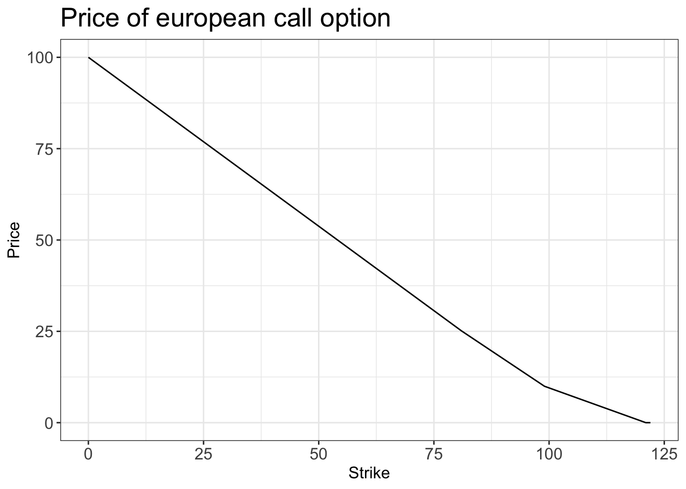
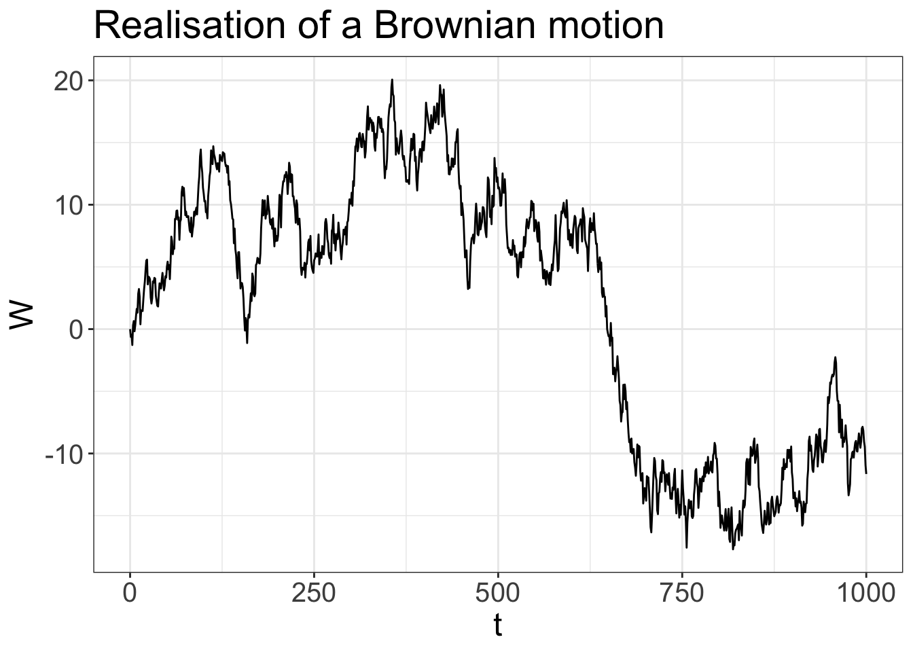

Complete Theory
Msc in Actuarial Mathematics
Joakim Bilyk
January 30, 2023
References
Below is given the abbreviations used when referencing to books:
| Chapter | Abbreviation | Source |
|---|---|---|
| Finance | Bjork | Arbitrage Theory in Continuous Time (Fourth edition) by Thomas Björk, Oxford University Press (2019). |
| Measure Theory | Bjork | Arbitrage Theory in Continuous Time (Fourth edition) by Thomas Björk, Oxford University Press (2019). |
| Linear Algebra | Wiki | Wikipedia |
| Random Variables | Bjork | Arbitrage Theory in Continuous Time (Fourth edition) by Thomas Björk, Oxford University Press (2019). |
| Stochastic Processes | Bjork | Arbitrage Theory in Continuous Time (Fourth edition) by Thomas Björk, Oxford University Press (2019). |
Finance
This topic revolves around the theory of the Brownian motion and martingale processes. Other main topics are the binomial model and an introduction to financial derivatives. Financial derivatives is contingent on the outcome of a stochastic process at some future time \(t=T\) and often is a function \(\Phi\) of some assets price \(S_t\). As such the derivative will give a stochastic payout, at time \(t=T\) of the size \(X_T=\Phi(S_T)\). Naturally we want to say something about the fair price of the derivative in the form of
\[\Pi_t(X_T)=\mathbb{E}\left[\Phi(S_T)\ \vert\ \mathcal{F}_t\right],\]
where \(\mathcal{F}_t\subset\mathcal{F}\) is the available information at time \(t\). We will by defualt intepret the times \(t=0\) as today and \(t=T\) as tomorrow. This indeed require some fundamental understanding of the behaviour of the asset price \(S_t\). This lead us over to discussing the process in center of the Black-Scholes model: the Brownian motion.
Discrete time models
One-period time models
The study of this course is the European call option (and put option). This financial derivative is an agreement between two parties where the holder of the option has the right to “exercise” the derivative, at a future time \(t=T\). Exercising means buying an asset at a certain agreed opon price-strike \(K\). In the case of the put-option: the holder has the right (but not obligation) to sell the asset at the strike price \(K\). As such the derivative has the payoff
\[\text{Call}\ \text{option:}\hspace{10pt}\Phi(S_T)=(S_T-K)^+,\hspace{20pt}\text{Put}\ \text{option:}\hspace{10pt}\Phi(S_T)=(K-S_T)^+.\]
Our objective is to understand when an arbitrage exist and to find the fair price of these derivative. The strategy in pricing is finding a replicating portfolio with the same payoff as the option (with probability one) and then price the derivative accordingly.
Model description
In the one-period model we consider the simplest possible market. We have two distinct times \(t=0\) (today) and \(t=1\) (tomorrow) and we may buy any portfolio as a mixture of bonds and one stock. We denote the bonds price by \(B_t\) and the stocks price by \(S_t\) and we assume the following:
\[ B_0=1,\ B_1=1+R,\hspace{20pt}S_0=s,\ S_1=\left\{\begin{matrix}s\cdot u, & with\ probability\ p_u.\\s\cdot d, & with\ probability\ p_d.\end{matrix}\right. \]
We may introduce \(Z\) as the random variable
\[ Z=u\cdot (I)+d\cdot (1-I), \]
for an bernoulli variable \(I\) with succes probability \(p_u\). Naturally, we assume \(d\le (1+R)\le u\) (this is imperative to ensure no arbitrage as we will see).
Portfolios and arbirtage
We study any portfolio on the \((B,S)\) market as a vector \(h=(x,y)\) where \(x\) is the amount of bonds and \(y\) is the amount of stock held in the portfolio. Notice that we allow for shorting, that is \(x<0\) or \(y<0\). As such, we have that \(h\in \mathbb{R}^2\). In this we have made some unrealistic, but attractable assumptions included in the assumptions:
- We allow short positions and fractional holding, i.e. \(h\in \mathbb{R}^2\),
- We assume no spread between ask and bids,
- No transaction costs and
- A completely liquid market i.e. we may borrow and buy as much stock and bonds as wanted.
Given that we have chosen a portfolio \(h\) we may introduce the value process.
Definition 2.1. (Bjork) The value process of the porfolio \(h\in\mathbb{R}^2\) is the stochastic process
\[V^h_t=xB_t+yS_t,\ t=0,1.\]
Given this notation we may define what an arbitrage is.
Definition 2.2. (Bjork) An arbitrage is a portfolio \(h\) with the properties: 1) \(V^h_0=0\), 2) \(P(V^h_1\ge 0)=1\) and 3) \(P(V^h_1>0)>0\).
That is \(h\) is an deterministic money-machine where we at least never loose any money. Granted the bonds give a determinictic non-negative return, but an arbitrage does not require any money out of pocket. With the notion of an arbitrage we will show the first proposition regarding the choice of \(R,u,d\) as defined above.
Proposition 2.3. (Bjork) The one-period binomial model is arbitrage free if and only if the following inequality hold:
\[d\le (1+R)\le u.\tag{2.1}\]
Proof.
The statement is proofed by contradiction. Assume that \(d>1+R\) holds. Then by definition \(u>d>1+R\). Notice that any portfolio satisfying \(V_0^h=0\) must satisfy
\[0=xB_0+yS_0=x+ys\iff x=-ys\]
That is for some choice \(y\) the only arbitrage candidate is the portfolio \(h=(-ys,y)\). Calculating the value at time \(t=1\) we have
\[V_1^h=-ys\cdot(1+R)+y\cdot s\cdot Z=ys(Z-1-R)\]
However since \(Z\ge d\) we have \(Z-(1+R)\ge 0\) and therefore an arbitrage (for \(y>0\)). The other inequality \(1+R>u\) follows analog steps. Simply choose some \(y<0\) and the result follows. \(\blacksquare\)
From inequality (2.1) we see that since \(1+R\) is between \(u\) and \(d\) we may find a pair \(q_d,q_u\ge 0\) with \(q_d+q_u=1\) such that
\[1+R=q_u\cdot u+q_d\cdot d.\]
This yields the important risk neutral valuation formula as summed op in the following definition
Definition 2.4. (Bjork) A probability measure \(Q\) is called a martingale meausre if the following condition holds:
\[S_0=\frac{1}{1+R}E^Q[S_1].\]
The above measure \(Q\) is the measure \(Q(Z=d)=q_d\) and \(Q(Z=u)=q_u\) for the binomial model. This does in fact yield the risk neautral valuation formula: \[\begin{align*} S_0&=\frac{1}{1+R}E^Q[S_1]=\frac{1}{1+R}(Q(Z=d)\cdot d\cdot s+Q(Z=u)\cdot u\cdot s)\\ &=s\frac{1}{1+R}(q_d\cdot d+q_u\cdot u)=s, \end{align*}\] where we simply use \(1+R=q_d\cdot d+q_u\cdot u\). We call this the risk neautral valuation formula because it in some sense gives an expected discounted value of the future stock price. We end this endavour with reformulating the arbitrage proposition and determining the values of the \(Q\)-measure.
Proposition 2.5. (Bjork) The one-period binomial model is arbitrage free if and only if there exists a martingale measure \(Q\).
Proposition 2.6. (Bjork) The one-period binomial model has martingale probabilities given by:
\[\left\{\begin{matrix}q_u=\frac{(1+R)-d}{u-d},\\ q_u=\frac{u-(1+R)}{u-d}.\end{matrix}\right.\]
Contingent Claims
This chapter revolves around the financial derivative and we start by stating the definition of the financial derivative.
Definition 2.7. (Bjork) A contingent claim (financial derivative) is any stochastic variable \(X\) of the form \(\Phi(Z)\), where \(Z\) is the stochastic varible driving the stock price process.
We may also call the function \(\Phi\) the contract function as it states how the contract is resolved once the stochastic variable \(Z\) has been realised. Our objective is now to study, what a buyer of said contract would have to pay at any given time \(t\). We call the fair price of \(X\) at time \(t\): \(\Pi_t[X]\). As such it is easy to see that the fair price at the time of maturity \(T\) is simply the payout \(X\) i.e. \(\Pi_T[X]=X\). Our strategy is to find a replicating portfolio \(h\) and determine the price of said portfolio.
Definition 2.8. (Bjork) A contingent claim \(X\) can be replicated, or said to be reachable if there exist a portfolio \(h\) such that
\[ V_1^h=X, \]
with probability one. In that case, we say that the portfolio \(h\) is a hedging portfolio or a replicationg portfolio. If all claims can be replicated we say that the market is complete.
Our pricing strategy is then to determine the value process of the replicating portfolio and then by the first pricing principle below we say that the price is imply the value of the replicating portfolio.
Pricing principle 1. If a clain \(X\) is reachable with replicating portfolio \(h\), then the only reasonable price process for \(X\) is given by
\[ \Pi_t[X]=V_t^h. \]
Notice, that this assumes that a replicating portfolio exist and even so we have a uniqueness statement to solve. We end this section by writing two important results.
Proposition 2.9. (Bjork) Suppose that a claim \(X\) is reachable with replicating portfolio \(h\). Then any price at time \(t\ge 0\) of the claim \(X\) other than the value process of \(h\) will lead to an arbitrage on the extended market \((B,S,X)\).
Proposition 2.10. (Bjork) If the one-period binomial model is free of arbitrage, then it is also complete.
The hedging portfolio in the one-period binomial model is given by the portfolio \((x,y)\) below \[\begin{align*} x&=\frac{1}{1+R}\cdot\frac{u\Phi(d)-d\Phi(u)}{u-d},\tag{2.2}\\ y&=\frac{1}{s}\cdot\frac{\Phi(u)-\Phi(d)}{u-d}.\tag{2.3} \end{align*}\]
Risk Neutral Valuation
We see that since the one-period model is complete we can price any contingent claim and we see that \[\begin{align*} \Pi_0[X]&=\frac{1}{1+R}\cdot\frac{u\Phi(d)-d\Phi(u)}{u-d}+s\frac{1}{s}\cdot\frac{\Phi(u)-\Phi(d)}{u-d}\\ &=\frac{1}{1+R}\left\{\frac{u\Phi(d)-d\Phi(u)}{u-d}+(1+R)\frac{\Phi(u)-\Phi(d)}{u-d}\right\}\\ &=\frac{1}{1+R}\left\{\frac{(1+R)-d}{u-d}\Phi(u)+\frac{u-(1+R)}{u-d}\Phi(d)\right\}\\ &=\frac{1}{1+R}E^Q[X]. \end{align*}\] i.e. the price at time \(t=0\) should simply be the expected discounted payout according to the martingale measure. This leads to the important pricing proposition:
Proposition 2.11. (Bjork) If the one-period binomial model is free of arbitrage, then the arbitrage free price of a contingent claim \(X\) is given by
\[ \Pi_0[X]=\frac{1}{1+R}E^Q[X].\tag{2.4} \]
Here the martingale measure \(Q\) is uniquely determined by the relation
\[ S_0=\frac{1}{1+R}E^Q[S_1],\tag{2.5} \]
and the explicit expressions for \(q_u\) and \(q_d\) are given in proposition 2.6. Furthermore the claim \(X\) can be replicated using the portfolio \[\begin{align*} x&=\frac{1}{1+R}\cdot\frac{u\Phi(d)-d\Phi(u)}{u-d},\tag{2.6}\\ y&=\frac{1}{s}\cdot\frac{\Phi(u)-\Phi(d)}{u-d}.\tag{2.7} \end{align*}\]
Multi-period model
The one-period binomial model can easily be extended to a multi-period model, by assuming that the bond and stock pricess evolve by the processes:
\[ t\ge1:\ B_t=(1+R)B_{t-1}\hspace{20pt}\text{and}\hspace{20pt}B_0=1, \]
\[ t\ge1:\ S_t=Z_{t-1}S_{t-1}\hspace{20pt}\text{and}\hspace{20pt}S_0=s, \]
where we obviously have that \(B_t=(1+R)^t\) for \(t\ge 0\). In the above \(Z_t\) is \(u\) with probability \(p_u\) and \(d\) with probability \(p_d\). In this context, we need to define a portfolio in terms of a strategy.
Definition 2.13. (Bjork) A portfolio strategy is a stochastic process on \(\{1,...,T\}\)
\[ h=\left\{h_t=(x_t,y_t);\ t=1,...,T\right\} \]
such that \(h_t\) is a function of \(S_0,S_1,...,S_{t-1}\). For a given portfolio strategy \(h\) we set \(h_0=h_1\) by convention. The associated value process corresponding to the portfolio \(h\) is defined by
\[ V_t^h=x_t(1+R)+y_tS_t. \]
Given this notation we may define what an arbitrage is, but first we introduce the notion of a self-financing portfolio. A self-financing portfolio in an intuative sense is a portfolio that is not withdrawn from or deposited into.
Definition 2.14. (Bjork) A portfolio strategy \(h\) is said to be self-financing if the following condition holds for all \(t=0,...,T-1\):
\[ x_t(1+R)+y_tS_t=x_{t+1}+y_{t+1}S_t. \]
The above equation says that the portfolio purchased at time \(t\) and helt until \(t+1\) \((x_{t+1},y_{t+1})\) can only be financed by the market value of the portfolio held from \([t-1,t)\) i.e. \((x_{t},y_{t})\). We now define an arbitrage.
Definition 2.15. (Bjork) An arbitrage is a self-financing portfolio \(h\) with the properties: 1) \(V^h_0=0\), 2) \(P(V^h_T\ge 0)=1\) and 3) \(P(V^h_T>0)>0\).
The multiperiod binomial model has an just like the oneperiod model a result regarding when an arbitrage exists.
Lemma 2.16. (Bjork) If \(d\le (1+R)\le u\) (eq. 2.8) then the multiperiod model is arbitrage-free.
As one can see, the multiperiod model is rather similar to the one period model. We wil in the following summarise equivalent statements for the multiperiod model as the ones in the oneperiod model.
Definition 2.17. (Bjork) The martingale probabilities \(q_u\) and \(q_d\) are defined as the probabilities for which the relation below holds.
\[ s=\frac{1}{1+R}E^Q[S_{t+1}\ \vert\ S_t]. \]
Proposition 2.18. (Bjork) The martingale probabilities \(q_u\) and \(q_d\) are given by
\[ \left\{\begin{matrix}q_u=\frac{(1+R)-d}{u-d},\\ q_u=\frac{u-(1+R)}{u-d}.\end{matrix}\right. \]
Definition 2.19. (Bjork) A contingent claim is a stochastic variable \(X\) of the form
\[ X=\Phi(S_T), \]
where the contract function \(\mathbf{\Phi}\) is some given real valued function.
Definition 2.20. (Bjork) A given contingent claim \(X\) is said to be reachable if there exists a self-financing portfolio \(h\) such that
\[ V_T^h=X, \]
with probability one. In that case we say that the portfolio \(h\) is a hedging portfolio or a replicating portfolio. If all claims can be replicated we say that the market is (dynamically) complete.
Pricing principle 2. (Bjork) If a claim \(X\) is reachable with replicating portfolio \(h\), then the only reasonable price process for \(X\) os given by
\[ \Pi_t[X]=V_t^h,\ t=0,1,...,T. \]
Proposition 2.21. (Bjork) Assume \(X\) is reachable by \(h\), then any price other than \(V_t^h\) for some \(t\ge 0\) leads to an arbitrage opportunity.
Proposition 2.22. (Bjork) The multiperiod model is complete, i.e. every claim can be replicated by a self-financing portfolio.
Proposition 2.24. (Bjork) (Binomial algorithm) Consider a \(T\)-claim \(X=\Phi(S_T)\). Then this claim can be replicated using af self-financing portfolio. If \(V_t(k)\) denotes the value of the portfolio at the node \((t,k)\) (\(k\) referring to \(k\) amount of up-moves for the stock), then \(V_t(k)\) can be computed recursively by the scheme
\[ \left\{\begin{matrix}V_t(k)=\frac{1}{1+R}\left\{q_uV_{t+1}(k+1)+q_dV_{t+1}(k)\right\},\\ V_T(k)=\Phi(su^kd^{T-k}).\end{matrix}\right. \]
where the martingale probabilities \(q_u\) and \(q_d\) are given by
\[ \left\{\begin{matrix}q_u=\frac{(1+R)-d}{u-d},\\ q_u=\frac{u-(1+R)}{u-d}.\end{matrix}\right. \]
With the notation as above, the hedging portfolio is given by
\[ \left\{\begin{matrix}x_t(k)=\frac{1}{1+R}\cdot\frac{uV_t(k)-dV_t(k+1)}{u-d},\\ y_t(k)=\frac{1}{S_{t-1}}\cdot\frac{V_t(k+1)-V_t(k)}{u-d}.\end{matrix}\right. \]
In particular, the arbitrage free price of the claim at \(t=0\) is given by \(V_0(0)\).
Example.

Consider \(R=0.04\), \(s=100\), \(u=1.1\), \(d=0.9\), \(p_u=0.6\) and \(p_d=0.4\). We consider a model of length \(T=2\) and we want to evaluate the price of the european call option with srike \(K=90\) that is the contingent claim
\[ X=(S_T-K)^+,\hspace{20pt}\Phi(s)=(s-K)^+. \]
For each time \(t\) we know the replicating portfolio, if we know the payoff the following period. Therefore we start from the leaves of the tree and work towards the root. Since the strike price is \(K=90\) the end result will be the following payoffs: \[\begin{align*} u^2:\hspace{20pt}&(121-90)^+=31\\ ud:\hspace{20pt}&(99-90)^+=9\\ du:\hspace{20pt}&(99-90)^+=9\\ d^2:\hspace{20pt}&(81-90)^+=0 \end{align*}\] Therefore by the risk neautral valuation formula with \(q_u=\frac{(1+R)-d}{u-d}=0.7\) and \(q_d=\frac{u-(1+R)}{u-d}=0.3\) we have that the cost of the replicating portfolio at time \(t=1\) is respectively \[\begin{align*} u:\hspace{20pt}&\frac{1}{1+R}\left\{31\cdot q_u + 9 \cdot q_d\right\}\approx 23.46\\ d:\hspace{20pt}&\frac{1}{1+R}\left\{9\cdot q_u + 0 \cdot q_d\right\}\approx 6.06 \end{align*}\] To replicate this payoff at time \(t=1\) we can use the risk neutral valuation formula once more to find the base cost of the replicating portfolio i.e. the price of \(X\) at time \(t=0\)
\[ \frac{1}{1+R}\left\{23.46\cdot q_u + 6.06 \cdot q_d\right\}\approx 17.54. \]
Working from the root to the leaves we can now calculate the hedging portfolio at time \(t=0,1\) for each path. For time \(t=0\) we calculate \[\begin{align*} x=&\frac{1}{1+R}\cdot \frac{u\cdot 6.06-d\cdot 23.46}{u-d}\approx -69.46,\\ y=&\frac{1}{s}\cdot\frac{23.46-6.06}{u-d}\approx0.87 \end{align*}\] We see by calculations that this does indeed replicate the payoff at time \(t=1\): \[\begin{align*} u:\hspace{20pt}&V_1^h=(1+R)\cdot x + 110\cdot y\approx 23.46,\\ d:\hspace{20pt}&V_1^h=(1+R)\cdot x + 90\cdot y\approx 6.06. \end{align*}\] We also see by calculation that the initial portfolio does cost the expected 17.54 as
\[ x\cdot 1+y\cdot100=87-69.46=17.54. \]
Following these steps at time \(t=1\) the portfolios \((-86.54,1)\) (for the up-scenario) and \((-38.94,0.5)\) (for the down-scenario) would arise. Notice when calculating \(y\) one has to use the current price \(S_1=S_0\cdot Z\) not \(S_0\). One should also check by similar calculations as above, that these portfolios does indeed replicate the payoff of the contingent claim \(X\). \(\square\)
Proposition 2.25. (Bjork) The arbitrage free price at \(t=0\) of a \(T\)-claim \(X\) is given by
\[ \Pi_0[X]=\frac{1}{(1+R)^T}E^Q[X] \]
where \(Q\) denotes the martingale measure, or more explicitly
\[ \Pi_0[X]=\frac{1}{(1+R)^T}\sum_{k=0}^T\binom{T}{k}q_u^kq_d^{T-k}\Phi(su^kd^{T-k}). \]
Example.
R <- 0.04
s <- 100
u <- 1.1
d <- 0.9
p_u <- 0.6
p_d <- 0.4
q_u <- (1+R-d)/(u-d)
q_d <- (u-1-R)/(u-d)
cap_t <- 2
#Test for K=90
K <- 90
pi_0 <- (1+R)**(-cap_t)*sum(
choose(cap_t,0:cap_t)*q_u**(0:cap_t)*q_d**(cap_t - 0:cap_t)*pmax(s*u**(0:cap_t)*d**(cap_t - 0:cap_t)-K,0)
) # = 17.53883
pi_0 <- unlist(lapply(0:ceiling(s*u**cap_t), function(K){
(1+R)**(-cap_t)*sum(
choose(cap_t,0:cap_t)*q_u**(0:cap_t)*q_d**(cap_t - 0:cap_t)*pmax(s*u**(0:cap_t)*d**(cap_t - 0:cap_t)-K,0)
)
}))
We follow an analog example as the one after proposition 2.24. Let \(K=90\) and we see that \[\begin{align*} &\Pi_0[X]\\ &=\frac{1}{(1+0.04)^2}\sum_{k=0}^2\binom{2}{k}\cdot0.7^k\cdot0.3^{2-k}\cdot\Phi(100\cdot 1.1^k\cdot0.9^{2-k})\\ &=0.9245562\cdot\left(\underbrace{1\cdot 1\cdot0.09\cdot0}_{k=0}+\underbrace{2\cdot 0.7\cdot0. 3\cdot 9}_{k=1}+\underbrace{1\cdot 0.49\cdot1\cdot31}_{k=2}\right)\\ &=0.9245562\cdot\left(0+3.78+15.19\right)\\ &=17.53883 \end{align*}\] Since we know that \(K\) must meaningfully range in \([0,121]\) we could try to calculate the price of the contingent claim at time \(t=0\) for all integers in this interval. We see that the price range between \(S_0\) and 0 as expected. One can also see that the price changes slope at the prices 99 and 121 as the function is linear in \(\Phi\) and som realisations loose any effect on the price when the strike is higher than the outcome. \(\square\)
Proposition 2.26. (Bjork) The condition \(d<(1+R)<u\) is necessary and sufficient condition for absence of arbitrage.
Generelised one-period model
In the previous we had the simpel model where we only had one stochastic asset \(S\) and only one stochastic variable \(Z\) determining the future stock price. Now we will generelise this model by introducing \(N\) assets and introducing som stochastic behaviour to the system.
Model specification
We consider the market consisting of a collection of stochastic prices assets \(i=1,...,N\) with \(N\)-dimensional price process.
\[ S_t=\begin{bmatrix} S_t^1\\ \vdots\\ S_t^N\end{bmatrix} \]
We now assume that \(S_t\) is defined on a background space with finite sample space \(\Omega = \{\omega_1,...,\omega_M\}\) with associated probabilities \(p_j=P(\omega_j)\), \(j=1,...,M\). We can then for eact time \(t=1,...,T\) define the \(N\times M\) matrix \(D_t\) as such
\[ D_t=\begin{bmatrix} S_t^1(\omega_1)&\cdots &S_t^1(\omega_M)\\ \vdots &\ddots & \vdots\\ S_t^N(\omega_1) &\cdots&S_t^M(\omega_M)\end{bmatrix}. \]
We will assume that \(S_0^1>0\) and \(S_1^1(\omega_j)>0\), \(j=1,...,M\).
Absence of Arbitrage
We now define a portfolio as an \(N\)-dimensional row vector
\[ h=\begin{bmatrix} h^1, \dots,h^N\end{bmatrix} \]
representing the amount of assets held at time \(t=0\) and held until \(t=1\). The value process is then
\[ V^h_t=h\cdot S_t=\sum_{i=1}^N h^iS_t^i,\ t=0,1.\tag{3.1} \]
For a given \(\omega_j\in\Omega\) we have the realisation
\[ V_t^h=hS_t(\omega_j)=hd_j=(hD)_j. \]
Definition 3.1. (Bjork) The portfolio \(h\) is an arbitrage portfolio fil it satisfies the conditions: \(V_0^h=0\), \(P(V_1^h\ge 0)=1\) and \(P(V_1^h>0)>0\).
Lemma 3.2. (Bjork) (Farkas’ Lemma) Suppose that \(d_0,d_1,...,d_M\) are column vectors in \(\mathbb{R}^N\). Then exactly one of the following problems possesses a solution.
- Problem 1: There exist \(\lambda_1,...,\lambda_M\ge0\) such that \(d_0=\sum_{j=1}^M\lambda_jd_j\).
- Problem 2: There exist \(h\in\mathbb{R}^N\) such that \(h^\top d_0<0\) and \(h^\top d_j\ge 0\) for \(j=1,...,M\).
We now investegate this system for any possible arbitrage portfolios. However first we acknowledge that there exist a nominal price system \(S_t\) and a normalised price system \(Z_t\). The latter we define as the nominel pricess under the numeraire \(S_t^1\) that is
\[ Z_t=\begin{bmatrix} S_t^1/S_t^1\\ S_t^2/S_t^1\\ \vdots\\ S_t^N/S_t^1\end{bmatrix}=\begin{bmatrix} 1\\ S_t^2/S_t^1\\ \vdots\\ S_t^N/S_t^1\end{bmatrix}. \]
The reason for introducing the normalized price system is that we can without much effort translate results in this system to the nominal system and the normalised system is easier to analize. For this, however, we need af few results.
Lemma 3.3. (Bjork) With notation as above, the following hold.
- The \(Z_t\) value process i related to the \(S_t\) value process by \[ V_t^{h,Z}=hZ_t=\frac{1}{S_t^1}V_t^h. \]
- A portfolio is an arbitrage in the \(S_t\) system if and only if there is an arbitrage in the \(Z_t\) system.
- In the \(Z_t\) price system, the numeraie asset \(Z^1\) has unit constant prices i.e. \(Z_t^1=1\) for all \(t\ge 0\).
One of the reason that the normalised system is attractable is that the numeraire asset is constant i.e. risk free in the normalised system. Let us formulate our first main result.
Proposition 3.4. (Bjork) The market is arbitrage free if and only if there exists strictly positive real numbers \(q_1,...,q_M\ge 0\) with \(q_1+\cdots + q_M=1\) (eq. 3.2) (probability vector) such that the following vector equality holds
\[ \begin{bmatrix} Z_0^1\\ \vdots\\ Z_N^1\end{bmatrix}=\begin{bmatrix} Z_1^1(\omega_1)\\ \vdots\\ Z_1^N(\omega_1)\end{bmatrix}q_1+\cdots +\begin{bmatrix} Z_1^1(\omega_M)\\ \vdots\\ Z_1^N(\omega_M)\end{bmatrix}q_M.\tag{3.3} \]
Martingale Measures
Definition 3.5. (Bjork) Given the objective probability measure \(P\) on \((\Omega,\mathcal{F},P)\), we say that another probability measure \(Q\) defined on \(\Omega\) is equivalent to \(P\) if
\[ \forall A\in\mathcal{F}:P(A)=0\iff Q(A)=0, \]
or equivalently
\[ \forall A\in\mathcal{F}:P(A)=1\iff Q(A)=1. \]
Definition 3.7. (Bjork) Consider the market model above and set \(S^1\) as the numeraire asset. We say that a probability measure \(Q\) defined on \(\Omega\) is a martingale measure if it satisfies the following conditions:
- \(Q\) is equivalent to \(P\), i.e. \(Q\sim P\).
- For every \(i=1,...,N\), the normalized asset price process \[ Z_t^i=\frac{S_t^i}{S_t^1}, \] is martingale under the measure \(Q\).
Theorem 3.8. (Bjork) (First Fundamental Theorem) Given a fixed numeraire, ther market is free of arbitrage possibilities if and only if there exists a martingale measure \(Q\).
By assuming that the numeraire asset is risk free (i.e. does not depend on \(\omega\)) then by scaling we can derive the short interest rate as
\[ 1+R=\frac{S_1^1}{S_0^1}. \]
With this in mind we can formulate theorem 3.8 in its more widely used form.
Theorem 3.9. (Bjork) (First Fundamental Theorem) Assume that there exist a risk free asset, and denote the corresponding risk free interest rate by \(R\). Then the market is arbitrage free if and only if there exist a measure \(Q\sim P\) such that
\[ S_0^i=\frac{1}{1+R}E^Q[S_1^i],\hspace{20pt}\text{for all}\ i=1,...,N.\tag{3.9} \]
Martingale Pricing
Moving forward we will assume that there exist a risk free asset and we will denote it by \(B_t\) (\(B_t=S^1_t/S^1_0\)).
Definition 3.10. (Bjork) A contingent claim is any random variable \(X\), defined on the sample space \(\Omega\).
To ensure no arbitrage in the extended market containing the \(N\) assets and the contingent claim we can apply the first fundamental pricing theorem on the extended market.
Proposition 3.11. (Bjork) Consider a given claim \(X\). In order to avoid arbitrage, \(X\) must then be priced according to the formula
\[ \Pi_0[X]=\frac{1}{1+R}E^Q[X],\tag{3.10} \]
where \(Q\) is a martingale measure for the underlying market \((\Pi,S^1,...,S^N)\).
Completeness
Given that a market is arbitrage-free we may run into a uniqueness issue when determining the price of a contingent claim. If a martingale measure exist we will very much like it to be unique as this will ensure that the price from the risk neutral valuation formula is unique. To this we need the market to be complete.
Definition 3.12. (Bjork) Consider a contingent claim \(X\). If there exists a portfolio \(h\), based on the underlying assets, such that
\[ V_1^h=X,\ \text{with probability 1}\tag{3.11} \]
i.e.
\[ V_1^h(\omega_j)=X(\omega_j),\ j=1,...,M,\tag{3.12} \]
then we say that \(X\) is replicated, or hedged by \(h\). Such a portfolio \(h\) is called a replicating, or hedging portfolio. If every contingent claim can be replicated, we say that the market is complete.
We can now formulate a proposition on when the market is complete in terms of the matrix \(D\).
Proposition 3.13. (Bjork) The market is complete if and only if the rows of the matrix \(D\) span \(\mathbb{R}^M\), i.e. if and only if \(D\) has rank \(M\).
Now we formulate the second fundamental pricing theorem in terms of the martingale measure \(Q\).
Proposition 3.14. (Bjork) (Second Fundamental Theorem) Assume that the model is arbitrage free i.e. \(Q\) exist. Then the market is unique if and only if the martingale measure is unique.
Stochastic Discount Factors
Definition 3.16. (Bjork) The random variable \(L\) on \(\Omega\) is defined by
\[ L(\omega_i)=\frac{q_i}{p_i},\hspace{20pt} i=1,...,M. \]
Definition 3.17. (Bjork) Assume the absence of arbitrage, and fix a martingale measure \(Q\). With notation as above, the stochastic discount factor (or “state price deflator”) is the random variable \(\Lambda\) on \(\Omega\) by
\[ \mathbf{M}(\omega)=\frac{1}{1+R}\cdot L(\omega).\tag{3.19} \]
Proposition 3.18. (Bjork) The arbitrage free price of any claim \(X\) is given by the formula
\[ \Pi_0[X]=E^P[\mathbf{M}\cdot X]\tag{3.20} \]
where \(\mathbf{M}\) is a stochastic discount factor.
Self-financing portfolios
We move forward in this chapter by first defining a self-financing portfolio in discrete time and then by letting the step length tend to zero obtain the continuous time analogue.
Discrete time SF portfolio
We consider \(N\) different adapted price processes \(S^1,...,S^N\). We use the following definition.
Definition 6.1. (Bjork) We use the following definitions.
- \(S_n^i\) is th price of asset \(i\) at time \(n\),
- \(h_n^i\) is the number of units of asset \(i\) held during \([n,n+1)\), that is bought at time \(n\),
- \(d_n^i\) is the dividends from asset \(i\) in the time-interval \([n-1,n)\), that is recieved at time \(n\),
- \(h_n\) is the portfolio \((h_n^1,...,h_n^N)\) held during \([n,n+1)\),
- \(c_n\) is the consumption i.e. withdrawel at time \(n\) (negative being deposits/saving),
- \(V_n\) is the value of the portfolio just before time \(n\) i.e. of the portfolio \(h_{n-1}\) at time \(n\).
We are now ready to define the self-financing portfolio
Definition 6.2. (Bjork) A self-financing portfolio supporting the consumption stream \(\mathbf{c}\) is a portfolio adhering to the budget constraint given as
\[ h_{n+1}S_{n+1}+c_{n+1}=h_nS_{n+1}+h_nd_{n+1.} \]
The interpretation being, that we may only use funds obtained from selling the old portfolio \(h_n\) and recieved in dividends to buy the new portfolio \(h_{n+1}\) and consume the amount \(c_{n+1}\).
Before studying the self-financing portfolio we define the operator \(\Delta\) (in definition 6.3) as the increment \(\Delta x_n=x_{n+1}-x_n\) of a countable sequence \((x_n)_{n\in\mathbb{N}_0}\). Notice that we define the increment forward so the increment \(n\) is the increment over the time period \([n,n+1)\) with the first increment being \([0,1)\). Using this notation we can derive the lemma below.
Lemma 6.4. (Bjork) For any pair of sequences of real numbers \((x_n)_{n\in\mathbb{N}_0}\) and \((y_n)_{n\in\mathbb{N}_0}\) we have the relations \[\begin{align*} \Delta(xy)_n&=x_n\Delta y_n+y_{n+1}\Delta x_n,\tag{6.5}\\ \Delta(xy)_n&=y_n\Delta x_n+x_{n+1}\Delta y_n,\tag{6.6}\\ \Delta(xy)_n&=x_n\Delta y_n+y_n\Delta x_n+\Delta x_n\Delta y_n.\tag{6.7} \end{align*}\] This is also valid if the sequances are \(N\)-dimensional, where we interpret the products above as scalar products (\(xy^\top\)).
Using these definitions and the lemma above we see that the dynamics of the self-financing portfolio is given below.
Proposition 6.6. (Bjork) The dynamics of any self-financing portfolio supporting the consumption stream \(c\) are given by
\[ \Delta V_n=h_n \Delta S_n+h_nd_{n+1}-c_{n+1},\tag{6.11} \]
or, in more detail
\[ \Delta V_n=\sum_{i=1}^Nh_n^i(\Delta S_n^i+d^i_{n+1})-c_{n+1}.\tag{6.12} \]
We may rewrite the dividends as accumulating dividends \(D^i_n=\sum_{k=1}^nd^i_k\) and see that \(d_{n+1}^i=\Delta D^i_n\) and so the above condition is equivalent with.
Proposition 6.8. (Bjork) The dynamics of any self-financing portfolio supporting the consumption stream \(c\) are given by
\[ \Delta V_n=h_n \Delta S_n+h_n\Delta D_n-c_{n+1},\tag{6.15} \]
or, in more detail
\[ \Delta V_n=\sum_{i=1}^Nh_n^i(\Delta S_n^i+\Delta D^i_n)-c_{n+1}.\tag{6.16} \]
Continuous time SF portfolio
Formulating the dynamics of the self-financing portfolio in continuous time is easy work given the discrete setup above. However since we now are in continuous time we will change the \(n\) with a \(t\) and cosider the behavour \(V_{t+dt}-V_t\) as we let \(dt\to 0\). First we formulate some basic notation.
Definition 6.9. (Bjork) We use the following definitions.
- \(S_t^i\) is th price of asset \(i\) at time \(t\),
- \(h_t^i\) is the number of units of asset \(i\) held at time \(t\),
- \(D_t^i\) is the cumulative dividend processs for asset \(i\),
- \(h_t\) is the portfolio \((h_t^1,...,h_t^N)\) held at time \(t\),
- \(c_t\) is the consumption rate at time \(n\) (negative being deposits/saving),
- \(V_t\) is the value of the portfolio at time \(t\) i.e. of the portfolio \(h_t\) at time \(t\).
Given these definitions we may define a portfolio strategy that is self-financing.
Definition 6.10. (Bjork) Let \(S\) be and adapted \(N\)-dimensional price process. We define the following
- A portfolio strategy is any adapted \(N\)-dimensional process \(h\).
- The value process \(V^h\) corresponding to the portfolio \(h\) is given by \[ V_t^h=\sum_{i=1}^N h_t^iS_t^i.\tag{6.17} \]
- A consumption process is any adapted one-dimensional process \(c\).
- A portfolio-consumption pair \((h,c)\) is called self-financing if the value process \(V^h\) satisfies the condition \[ dV_t^h=\sum_{i=1}^N h_t^i(dS_t^i+d D^i_t)-c_t\ dt,\tag{6.18} \] i.e. if \[ dV_t^h=h_t\ dS_t + h_t\ dD_t -c_t\ dt. \]
- The gain process \(G\) is defined by \[ G_t=S_t+D_t\tag{6.19} \] so we can write the self-financing condition as \[ dV_t=h_t\ dG_t-c_t\ dt.\tag{6.20} \]
- The portfolio \(h\) is said to be Markovian if it is of the form \[ h_t=h(t,S_t), \] for some function \(h : \mathbb{R}_+\times \mathbb{R}^N\to\mathbb{R}^N\).
Portfolio weights
Definition 6.11. (Bjork) For a given portfolio \(h\) the corresponding relative portfolio or portfolio weights \(w\) are defined by
\[ w_t^i=\frac{h_t^iS_t^i}{V_t^h},\ i=1,...,N,\tag{6.21} \]
so, in particular, we have \(\sum_{i=1}^N w_i=1\).
Lemma 6.12. (Bjork) A portfolio-consumption par \((h,c)\) is self-financing if and only if
\[ dV_t^h=V_t^h\sum_{i=1}^N w_t^i\frac{dS_t^i+dD_t^i}{S_t^i}-c_t\ dt\tag{6.22} \]
or equivalently with the absolute weights
\[ dV_t^h=\sum_{i=1}^N h_t^i(dS_t^i+dD_t^i)-c_t\ dt. \]
Lemma 6.13. (Bjork) Consider the case with no dividends. Let \(c\) be a consumption process, and assume that there exist a scalar process \(Z\) and a vector process \(q=(q^1,...,q^N)\) such that
\[ dZ_t=Z_t\sum_{i=1}^N q_t^i\frac{dS_t^i}{S_t^i}-c_t\ dt,\tag{6.23} \]
and \(\sum_{i=1}^Nqq^i=1\) (eq. 6.24). Now define a portfolio \(h\) by
\[ h_t^i=\frac{q_t^iZ_t}{S_t^i}.\tag{6.25} \]
Then the value process \(V^h\) is given by \(V^h=Z\), the pair \((h,c)\) is self-financing, and the corresponding relative portfolio \(w\) is given by \(w=q\).
Black-Scholes PDE
The Black-Scholes model revolves arround SDE’s as seen above. In this model we have two assets a risk free asset \(B\) and a stochastic priced asset \(S\). We therefore start by defining what we mean by a quote-on-qoute risk free asset.
Definition 7.1. (Bjork) The price process \(B\) is the price of a risk free asset if it has the dynamics
\[ dB_t=r_t B_t\ dt,\tag{7.1} \]
where \(r\) is any \(\mathcal{F}_t\) adapted process.
We see from this definition that the meaning of “risk free” is the property, that \(B\) is priced locally deterministic in the sence that \(r\) is adapted and therefore known at time \(t\) and we therefore know the yield on a short term basis. This is also why we may call \(r\) the short interest rate. Given the dynamics above, we know that \(B\) in fact is represented by the process
\[ B_t=B_0e^{\int_0^tr_s\ ds}, \]
for some \(B_0\) initial value. We will moving forward assume that \(B_0=1\). The stochastic asset \(S\) has dynamics.
\[ dS_t=\mu(t,S_t)\ dt + \sigma(t,S_t)\ dW_t,\tag{7.2} \]
where as usual \(\mu\) and \(\sigma\) are deterministic functions and \(W_t\) is a standard Brownian motion. Note that the risk free asset has a similarly process with \(\sigma = 0\). We may now include this in the definition of the Black-Scholes model.
Definition 7.2. (Bjork) The Black-Scholes model consists of two assets with dynamics given by \[\begin{align*} dB_t&=rB_t\ dt,\tag{7.3}\\ dS_t&=\mu S_t\ dt+\sigma S_t\ dW_t,\tag{7.4} \end{align*}\] where \(r,\mu,\sigma\) are deterministic constants.
Definition 7.3. (Bjork) A zero coupon bond with maturity \(T\) (henceforth “\(T\)-bond”) is an asset which pays the holder the face value 1 dollar at time \(T\). The price at time \(n\) of a \(T\)-bond is denoted by \(p(n,T)\).
Definition 7.4. The (possible stochastic) discrete short rate \(r_n\), for the period \([n,n+1]\), is defined as
\[ p(n,n+1)=\frac{1}{1+ r_n}.\tag{7.6} \]
From this short rate we may derive the dynamics of the bank account recieving zero-coupon rates for each distinct time interval.
Definition 7.5. (Bjork) The dynamics of the bank account are given by
\[ \Delta B_n=r_n B_n.\tag{7.7} \]
Contingent Claims and Arbitrage
Definition 7.6. (Bjork) A European call option with exercise price (or strike price) \(K\) and time of maturity (exercise date) \(T\) on the underlying asset \(S\) is a contract defined by the following clauses:
- The holder of the option has, at time \(T\), the right to buy one share of the underlying stock at the price \(K\) dollars from the underwriter of the option.
- The holder of the option is in no way obliged to buy the underlying stock.
- The right to buy the underlying stock at the price \(K\) can only be exercised at the precise time \(T\).
Obviously, we also have the european put option which gives the owner the right to sell an asset at price \(K\) at time \(T\). Let os formally define a contingent claim.
Definition 7.7. Consider a financial market with vector price process \(S\). A contingent claim with date of maturity \(T\), also called a \(T\)-claim, is any random variable \(\mathcal{X}\in\mathcal{F}_T^S\). A contingent claim \(\mathcal{X}\) is called a simple claim if it is of the form \(\mathcal{X} = \Phi(S_t)\). The function \(\Phi\) is called the contract function.
Definition 7.8. (Bjork) An arbitrage possibility on a financial market is a self-financed portfolio \(h\) such that \[\begin{align*} V^h(0)&=0,\tag{7.13}\\ P(V_T^h\ge0)&=1,\tag{7-14}\\ P(V_T^h>0)&>0.\tag{7.15} \end{align*}\] We say that the market is arbitrage free if there are no arbitrage possibilities.
Definition 7.9. (Bjork) Suppose that there exists a self-financing portfolio \(h\), such that the value process \(V^h\) has the dynamics
\[ d V_t^h=k_tV_t^h\ dt,\tag{7.16} \]
where \(k\) is an adapted process. Then it must hold that \(k_t=r_t\) for all \(t\), ore there exists an arbitrage possibility.
Theorem 7.10. (Bjork) (Black-Scholes equation) Assume that the market is specified by the equations \[\begin{align*} dB_t&=rB_t\ dt,\tag{7.18}\\ dS_t&=\mu(t,S_t) S_t\ dt+\sigma(t,S_t)S_t\ dW_t,\tag{7.19} \end{align*}\] and that we want to price a contingent claim of the form \(\mathcal{X}=\Phi(S_t)\) (eq. 7.20). Then the only pricing function of the form \(\Pi_t[\Phi(S_t)]=F(t,S_t)\) (eq. 7.21) which is consistent with the absence of arbitrage in the market \([B_t,S_t,\Pi_t]\) is when \(F\) is the solution of the following boundary value problem in the domain \([0,T]\times\mathbb{R}_+\): \[\begin{align*} F_t(t,s)+rsF_s(t,s)+\frac{1}{2}s^2\sigma^2(t,s)F_{ss}(t,s)-rF(t,s)&=0,\\ F(T,s)&=\Phi(s). \end{align*}\]
Risk Neutral Valuation
Theorem 7.11. (Bjork) (Risk Neutral Valuation) The arbitrage free price of the claim \(\Phi(S_t)\) is given by \(\Pi_t[\Phi]=F(t,S_t)\), where \(F\) is given by the formula
\[ F(t,s)=e^{-r(T-t)}E^Q_{t,s}[\Phi(S_T)],\tag{7.43} \]
where the \(Q\)-dynamics of \(S\) are those of
\[ dS_t=rS_t\ dt+S_t\sigma(t,S_t)\ dW_t^Q.\tag{7.42} \]
Property 7.12. (Bjork) (The Martingale Property) In the Black-Scholes model, the price process \(\Pi_t\) for every traded asset, be it the underlying or derivate asset, has the property the the normalized price process
\[ Z_t=\frac{\Pi_t}{B_t}, \]
(including \(S_t/B_t\)) is a martingale under the measure \(Q\).
Black-Scholes formula

This chapter will center on deriving the famous Black-Scholes formula. We start by laying out the assumptions of the model. We have a market consiting of two assets: a stochastic prices asset \(S\) and a risk free asset \(B\). The prices processes have dynamics: \[\begin{align*} dS_t&=\mu S_t\ dt+\sigma S_t\ dW_t,\tag{7.45}\\ dB_t&=r B_t\ dt,\tag{7.44} \end{align*}\] where \(S_0=s\) and \(B_0=1\) (by assumption). Now from Feymann-Kac and the definition of arbitrage we know that a simple claim \(\Phi(S_t)\) has the arbitrage free price given by the risk neutral valueation formula.
\[ F(t,s)=e^{-r(T-t)}E^Q_{t,s}[\Phi(S_T)],\tag{7.46} \]
where \(Q\) is a probability measure, namely a Martingale measure, such that the dynamics of \(S\) under this measure is
\[ dS_t=r S_t\ dt+\sigma S_t\ dW^Q_t,\tag{7.47} \]
with \(W_t^Q\) being a Brownian motion wrt. to the probability measure \(Q\) (not \(P\)). The above still has the initial condition \(S_0=s\). Given these assumptions we may formulate the Black-Scholes formula.
Theorem 7.13. (Bjork) (Black-Scholes formula) The price of the european call option with strikeprice \(K\) and maturity \(T\) (contract function \(\Phi(S_t)=\left( S_t - K\right)^+\)) takes the form \(\Pi_t=F(t,s)\), where
\[ F(t,s)=s N(d_1(t,s))-e^{-r(T-t)}KN(d_2(t,s)),\tag{7.52} \]
where \(N\) is the distribution-function for an \(\mathcal{N}(0,1)\)-distributed random variable and \[\begin{align*} d_1(t,s)&=\frac{1}{\sigma \sqrt{T-t}}\left(\log\left(\frac{s}{K}\right)+\left(r+\frac{1}{2}\sigma^2\right)(T-t)\right),\tag{7.53}\\ d_2(t,s)&=d_1(t,s)-\sigma\sqrt{T-t}.\tag{7.54} \end{align*}\]
Proof.
We let the market be given in terms of the price processes \(S\) and \(B\) with dynamics. \[\begin{align*} dS_t&=\mu S_t\ dt+\sigma S_t\ dW_t,\\ dB_t&=r B_t\ dt, \end{align*}\] with \(B_t=1\) and \(S_t=s\). We assume that \(\mu,\sigma, r\) are deterministic real numbers. Consider the contingent claim
\[ \Phi(S_t)=\left( S_t - K\right)^+, \]
that is the European call option. Let \(Q\) be a martingale measure such that the dynamics of \(S\) may be written as
\[ dS_t=r S_t\ dt+\sigma S_t\ dW^Q_t, \]
then \(S_t\) is clearly a GBM wrt. the measure \(Q\). Therefore we know the solution given in terms of the increment of the Brownian motion \(W^Q\) as follows
\[ S_u=s\cdot \exp\left\{\left(r-\frac{1}{2}\sigma^2\right)(u-t)+\sigma\left(W_u^Q-W_t^Q\right)\right\}, \]
for some initial condition \(S_t=s\). From theorem 7.10 we know that the only pricing function which takes the form
\[ \Pi_t[\Phi(S_T)]=F(t,S_t), \]
can only be consistent with the absence of arbitrage if \(F\) is the solution the the boundary value problem \[\begin{align*} F_t(t,s)+rsF_s(t,s)+\frac{1}{2}s^2\sigma^2F_{ss}(t,s)-rF(t,s)&=0,\\ F(T,s)&=\Phi(s). \end{align*}\] From Feymann-Kac we then know that the stochastic representation of such a solution take the form
\[ F(t,s)=e^{-r(T-t)}E_{t,s}^Q[\Phi(S_T)]. \]
Here the superscript refers to taking mean value with respect to the measure \(Q\). This gives the solution to the pricing function
\[ F(t,s)=e^{-r(T-t)}\int \Phi(S_T)\ dQ. \]
Under the measure \(Q\) we have that for \(u\ge t\):
\[ Z_u=\log (S_u/s)\sim \mathcal{N}\left(\left(r-\frac{1}{2}\sigma^2\right)(u-t),\sigma\sqrt{u-t}\right) \]
Hence we may set \(u=T\) and observe that \[\begin{align*} F(t,s)&=e^{-r(T-t)}\int_{-\infty}^\infty \Phi(se^z) f(z)\ dz\\ &=e^{-r(T-t)}\int_{-\infty}^\infty (se^z-K)^+ f(z)\ dz\\ &=e^{-r(T-t)}\int_{\log\left(\frac{K}{s}\right)}^{\infty} (se^z-K) f(z)\ dz\\ &=e^{-r(T-t)}\left(s\int_{\log\left(\frac{K}{s}\right)}^{\infty} e^z f(z)\ dz-K\int_{\log\left(\frac{K}{s}\right)}^{\infty} f(z)\ dz\right), \end{align*}\] where we used that \(f\) is the distribution function of a normal distributed random variable with mean \((r-\sigma^2/2)(T-t)\) and variance \(\sigma\sqrt{T-t}\) and that
\[ (se^z-K)^+ \ge 0\iff se^z\ge K\iff z\ge \log\left(\frac{K}{s}\right) \]
Using that the MGF of a \(X\sim\mathcal{N}(\alpha, \beta^2)\) variable is
\[ E[e^{tX}]=e^{\alpha t+\frac{1}{2}\beta ^2t^2}, \]
and the shorthand \(N(t)\) for the distribution function of the standard normal distribution, we have \[\begin{align*} F(t,s)&=e^{-r(T-t)}\left(sE\left[e^{Z_T}1_{Z_T\ge \log\left(\frac{K}{s}\right)}\right]-K P\left(Z_T\ge \log\left(\frac{K}{s}\right)\right)\right)\\ &=e^{-r(T-t)}s\exp\left\{\left(r-\frac{1}{2}\sigma^2\right)(T-t)+\frac{1}{2}\sigma^2(T-t)\right\}E\left[1_{Z_T\ge \log\left(\frac{K}{s}\right)}\right]\\ &-e^{-r(T-t)}K P\left(X\ge\frac{1}{\sigma\sqrt{T-t}}\left( \log\left(\frac{K}{s}\right)-(r-\sigma^2/2)(T-t)\right)\right)\\ &=sE\left[1_{Z_T\ge \log\left(\frac{K}{s}\right)}\right]-e^{-r(T-t)}K P\left(X\le\frac{1}{\sigma\sqrt{T-t}}\left(\log\left(\frac{s}{K}\right)+(r-\sigma^2/2)(T-t)\right)\right)\\ &=sN(d_1(s,t))-e^{-r(T-t)}K N\left(d_2(s,t)\right), \end{align*}\] as desired. \(\blacksquare\)
Completeness and Hedging
We derived the pricing function of the european call option above and introduced the theory around boundary value problems and Feymann-Kac solution to the partial differential stochastic equation. Now we want to see if a portfolio exists such that it gives the payout \(\Phi(S_T)\) with probability one.
In order to do this, we return to the concept of hedge and replication.
Definition 8.1. (Bjork) We say that a \(T\)-claim \(\mathcal{X}\) can be replicated, alternatively the it is reachable or hedgeable, if there exists a self-financing portfolio \(h\) such that
\[ V_T^h=\mathcal{X},\ P-\text{a.s.}\tag{8.1} \]
In this case we say that \(h\) is a hedge against \(\mathcal{X}\). Alternatively, \(h\) is called a replicating or hedging portfolio. If every contingent claim is reachable we say that the market is complete.
If we can find a portfolio \(h\) that reaches \(\mathcal{X}\) in value over the time period \([t,T]\) it must mean, that holding the portfolio is equivalent with holding the contract itself. We therefore have the natural assumption that the price process must satisfie \(\Pi_t[\mathcal{X}]=V_t^h\) for all \(t\ge 0\). How this relates to the absence of arbitrage is given below.
Proposition 8.2. (Bjork) Suppose \(\mathcal{X}\) is hedged using the portfolio \(h\). Then the only price process \(\Pi_t[\mathcal{X}]\) which is consistent with no arbitrage is given by \(\Pi_t[\mathcal{X}]=V_t^h\). Furthermore, if \(\mathcal{X}\) can be hedged by both \(h\) and \(g\) then \(V_t^g=V_t^h\) for all \(t\) with probability one.
Completeness in Black-Scholes
The Black-Scholes model will be investegated in the following. We start by stating the important theorem.
Theorem 8.3. (Bjork) Consider the Black-Scholes model given by \[\begin{align*} dS_t&=\mu(t,S_t) S_t\ dt+\sigma(t,S_t) S_t\ dW_t,\tag{8.2}\\ dB_t&=r B_t\ dt,\tag{8.3} \end{align*}\] The model above is complete.
The following lemma gives us replicability of a simple claim (which we will restrict ud to).
Lemma 8.4. (Bjork) Suppose that there exist an adapted process \(V\) and an adapted process \(w=[w^B,w^S]\) with \(w^B_t+w^S_t=1\) (eq. 8.4) for all \(t\ge 0\), such that \[\begin{align*} dV_t&=V_t(w_t^Br+w_t^S\mu(t,S_t))\ dt+V_tw_t^S\sigma(t,S_t)\ dW_t,\tag{8.5}\\ V_t&=\Phi(S_t).\tag{8.5} \end{align*}\] Then the claim \(\mathcal{X}=\Phi(S_t)\) can be replicated using \(w\) as the relative portfolio. The corresponding value process is given by the process \(V\) and the absolute portfolio \(h\) is given by \[\begin{align*} h_t^B&=\frac{w_t^B V_t}{B_t},\tag{8.6}\\ h_t^S&=\frac{w_t^S V_t}{S_t}.\tag{8.7} \end{align*}\]
Doing some heuristics we come up with some clever weights, which turns on to adhere to the boundary value problem formulated in the Black-Scholes equation. Given that the weights gives rise to the desired value process, we have succesfully found the portfolio weight (see lemma above).
Theorem 8.5. (Bjork) Consider the Black-Scholes model given in (8.3)-(8.4), and a simple contingent claim \(\mathcal{X}=\Phi(S_t)\). Define \(F\) as the solution to the boundary value problem \[\begin{align*} F_t(t,s)+rsF_s(t,s)+\frac{1}{2}s^2\sigma^2F_{ss}(t,s)-rF(t,s)&=0,\tag{8.17}\\ F(T,s)&=\Phi(s).\tag{8.17} \end{align*}\] Then \(\mathcal{X}\) can be replicated by the relative portfolio \[\begin{align*} w_t^B&=\frac{F(t,S_t)-S_tF_s(t,S_t)}{F(t,S_t)},\tag{8.18}\\ w_t^S&=\frac{S_tF_s(t,S_t)}{F(t,S_t)}.\tag{8.19} \end{align*}\] The corresponding absolute portfolio is given by \[\begin{align*} h_t^B&=\frac{F(t,S_t)-S_tF_s(t,S_t)}{B_t},\tag{8.20}\\ h_t^S&=F_s(t,S_t),\tag{8.21} \end{align*}\] and the value process \(V^h\) is given by
\[ V^h_t=F(t,S_t).\tag{8.22} \]
Proposition 8.6. (Bjork) Consider the Black-Scholes model given in (8.3)-(8.4), and a contingent claim on the form \(\mathcal{X}=\Phi(S_T,Z_T)\) (eq. 8.29). We define the process \(Z_t\) as
\[ Z_t=\int_0^tg(u,S_u)\ du,\tag{8.30} \]
for some choice of the deterministic function \(g\). Then \(\mathcal{X}\) can be replicated using a relative portfolio given by \[\begin{align*} w_t^B&=\frac{F(t,S_t,Z_t)-S_tF_s(t,S_t,Z_t)}{F(t,S_t,Z_t)},\tag{8.31}\\ w_t^S&=\frac{S_tF_s(t,S_t,Z_t)}{F(t,S_t,Z_t)}.\tag{8.32} \end{align*}\] where \(F\) is the solution to the boundary value problem \[\begin{align*} F_t(t,s,z)+rsF_s(t,s,z)+\frac{1}{2}s^2\sigma^2F_{ss}(t,s,z)-rF(t,s,z)&=0,\tag{8.33}\\ F(T,s,z)&=\Phi(s,z).\tag{8.33} \end{align*}\] The corresponding value process is given by \(V_t=F(t,S_t,Z_t)\), and \(F\) has the stochastic representation
\[ F(t,s,z)=e^{-r(T-t)}E^Q_{t,s,z}[\Phi(S_T,Z_T)],\tag{8.34} \]
where the \(Q\)-dynamics are given by \[\begin{align*} dS_u&=rS_u\ du + S_u\sigma(u,S_u)\ dW^Q_u,\tag{8.35}\\ S_t&=s,\tag{8.36}\\ dZ_u&=g(u,S_u)\ du,\tag{8.37}\\ Z_t&=z.\tag{8.38} \end{align*}\]
Absence of Arbitrage
In general we have conflicting forces when evaluating when a certain market is arbitrage free and/or complete. We have in simple terms the non-rigorous theorem below.
Meta-theorem 8.3.1. (Bjork) Let \(N\) denote the number of underlying traded assets in the model excluding the risk free asset, and let \(R\) denote the number of random sources driving the price system. Genericallly we then have the following statements.
- The model is arbitrage free if and only if \(N\le R\).
- The model is complete if and only if \(N\ge R\).
- The model is arbitrage free and complete if and only if \(N=R\).
Incomplete Markets
We assume a market with a risk free asset and one risky assets with dynamics
\[ dX_t=\mu(t,X_t)\ dt+\sigma(t,X_t)\ dW_t.\tag{9.1} \]
We want to find a unique price of a derivative on a functional form of the risky asset. We assume that we cannot invest in the asset representing the process \(X_t\) and so we can solely write contracts based on the observation \(X_T\). The problem here is that we can only short or long the risk free asset and so no derivative is replicable.
The way we solve this problem is by having the market set the price of risk and universally price derivatives based on this given price process. We then have the assumptions
Assumption 9.2.1 We have the market given with the only investable asset \(B\) with dynamics
\[ dB_t=rB_t\ dt.\tag{9.2} \]
We furthermore, have an empirically observable stochastic process \(X\) which is not the price process of any traded asset. The \(P\)-dynamics of \(X\) is given by
\[ dX_t=\mu(t,X_t)\ dt+\sigma(t,X_t)\ dW_t. \]
Assumption 9.2.2 There is a liquid market for every contingent claim.
Assumption 9.2.3 We assume that
- There is a liquid, frictionless market for each of the contingent claims \(\mathcal{Y}\) and \(\mathcal{Z}\).
- The market prices of the claims are of the form \[ \Pi_t[\mathcal{Y}] = F(t,X_t),\] \[ \Pi_t[\mathcal{Z}] = G(t,X_t),\] where \(F\) and \(G\) are smooth real valued function.
From Ito’s formula we have the dynamics \[\begin{align*} dF=\mu_F F\ dt+\sigma_F F\ dW,\tag{9.4}\\ dG=\mu_G G\ dt+\sigma_G G\ dW.\tag{9.5} \end{align*}\] Where the processes \(\mu_F\) and \(\sigma_F\) are given by \[\begin{align*} \mu_F&=\frac{F_t+\mu F_x+\frac{1}{2}\sigma^2 F_{xx}}{F},\\ \sigma_F&=\frac{\sigma F_x}{F}. \end{align*}\] By forming a portfolio of the two contracts we lead to the relation.
\[ \frac{\mu_F-r}{\sigma_F}=\frac{\mu_G-r}{\sigma_G}. \]
This gives the important insight.
Proposition 9.1. (Bjork) Assume that the market for derivatives is free of arbitrage. Then there exists a universal process \(\lambda(t,X_t)\) such that, with probability one, and for all \(t\), we have
\[ \frac{\mu_F(t,X_t)-r}{\sigma_F(t,X_t)}=\mu(t,X_t),\tag{9.7} \]
regardless of the specific choice of the derivative \(F\).
Proposition 9.2. (Bjork) Assume absence of arbitrage, the pricing function \(F(t,x)\) of the \(T\)-claim \(\Phi(X_T)\) solves the following boundary value problem. \[\begin{align*} F_t(t,x)+\mathcal{A}F(t,x)-rF(t,x)&=0,\hspace{15pt}&(t,x)\in (0,T)\times \mathbb{R},\tag{9.8}\\ F(T,x)&=\Phi(x), &x\in\mathbb{R},\tag{9.9} \end{align*}\] where
\[ \mathcal{A}F(t,x)=\left\{\mu(t,x)-\lambda(t,x)\sigma(t,x)\right\}F_x(t,x)+\frac{1}{2}\sigma^2(t,x)F_{xx}(t,x). \]
Proposition 9.3. (Bjork) (Risk neutral valuation) Assuming absence of arbitrage, the pricing function \(F(t,x)\) of the \(T\)-claim \(\Phi(X_T)\) is given by the formula
\[ F(t,x)=e^{-r(T-t)}E^Q_{t,x}[\Phi(X_T)].\tag{9.11} \]
The dynamics of \(X\) under the martingale measure \(Q\) are given by
\[ dX_t=\left\{\mu(t,x)-\lambda(t,x)\sigma(t,x)\right\}F_x(t,x)+\sigma(t,x)\ dW^Q_t, \]
where \(W^Q\) is a \(Q\)-Brownien motion.
Parity relations
Put-call Parity
The notion of continuous rebalancing the replicating portfolio require leads to problems in the real world. Trading does cost some money (typical in fractions) and so contiuous balancing would make the portfolio go to 0 rather quickly. Why? The Brownian motion has unbounded variation and so we would have to sell and buy the portfolio uncountable many time in any interval and the shift in weight is not neglible. Because of this we would like to see which claims we can replicate by buying and holding a combination of assets and derivatives.
Proposition 10.1. (Bjork) Let \(\Phi\) and \(\Psi\) be contract functions for the \(T\)-claims \(\mathcal{X}=\Phi(S_T)\) and \(\mathcal{Y}=\Psi(S_T)\). Then for any real numbers \(\alpha\) and \(\beta\) we have the following price relation:
\[ \Pi_t[\alpha \Phi + \beta\Psi]=\alpha \Pi_t[\Phi]+\beta\Pi_t[\Psi].\tag{10.1} \]
If we consider the basic contract functions \[\begin{align*} \Phi_S(x)&=x,\tag{10.2}\\ \Phi_B(x)&=1,\tag{10.3}\\ \Phi_{C,K}(x)&=(x-K)^+,\tag{10.4}\\ \Phi_{P,K}(x)&=(K-x)^+. \end{align*}\] That is a contract paying (respectively): the price of one stock, 1 dollar, one european call and one european put both with strike \(K\). It is clear that the following prices are \[\begin{align*} \Pi_t[\Phi_S]&=S_t,\tag{10.5}\\ \Pi_t[\Phi_B]&=e^{-r(T-t)},\tag{10.6}\\ \Pi_t[\Phi_{C,K}]&=c(t,S_t;K,T),\tag{10.7}\\ \Pi_t[\Phi_{P,K}]&=p(t,S_t;K,T). \end{align*}\] Where \(c(t,s,K,T,r,\sigma)\) and \(p(t,s,K,T,r,\sigma)\) are the pricing function of the european call and put option. We see that we can replicate these payouts by: buying the stock today and selling at time \(T\), buying a zero coupon \(T\)-bond with face value 1, buying the call and put option.
Then we can by choosing \(\alpha,\beta,\gamma_1,...,\gamma_n\) form a portfolio consisting of \(\alpha\) stocks, \(\beta\) \(T\)-bonds and \(\gamma_i\) call options with maturity \(T\) and strike \(K_i\). The price is then a linear combination given the choice (se proposition 10.1).
The put option is not includet in the above portfolio as we have the put-call parity below
Proposition 10.2. (Bjork) (Put-call parity) Consider a European call and a European put, both with strike \(K\) and time of maturity \(T\). Then we have the relation.
\[ p(t,s) = Ke^{-r(T-t)}+c(t,s)-s.\tag{10.11} \]
In particular the put option can be replicated by a constant portfolio consisting of \(K\) zero coupon \(T\)-bonds, a European call option and a single short position in the underlying stock.
We now have the pleasing proposition given the class of claims we can reach with the buy-and-hold portfolio with \(T\)-bonds, stock and call options
Proposition 10.3. (Bjork) Fix an arbitrary continuous contract function \(\Phi\) with compact support. Then the corresponding contract can be replicated with arbitrary precision (in sup-norm) using a constant portfolio consisting only of bonds, call options and the underlying stock.
The Greeks
When holding a portfolio we may denote the pricing function by \(P(t,s)\). Here we only have one underlying asset with price process \(S_t\). We now have two types of risk:
- Price changes in the underlying asset.
- Misspecifications in the model parameters.
These two risk give rise to “the greeks” as defined below.
Definition 10.4. (Bjork) The greeks of a portfolio is given by
\[ \Delta=\frac{\partial P}{\partial s},\ \Gamma=\frac{\partial^2 P}{\partial s^2},\ \rho=\frac{\partial P}{\partial r},\ \Theta=\frac{\partial P}{\partial t},\ \mathcal{V}=\frac{\partial P}{\partial s}. \]
For the call option in particular we have the following derivatives.
Proposition 10.5. (Bjork) The greeks of a portfolio consisting of a single European call option with maturity \(T\) and strike price \(K\) have the following greeks (\(\varphi\) denoting the density function of a \(\mathcal{N}(0,1)\)-variable): \[\begin{align*} \Delta&=N(d_1),\tag{10.17}\\ \Gamma&=\frac{\varphi(d_1)}{s\sigma\sqrt{T-t}},\tag{10.18}\\ \rho&=K(T-t)e^{-r(T-t)}N(d_2),\tag{10.19}\\ \Theta&=-\frac{s\varphi(d_1)\sigma}{2\sqrt{T-t}}-rKe^{-r(T-t)}N(d_2),\tag{10.20}\\ \mathcal{V}&=s\varphi(d_1)\sqrt{T-t}\tag{10.21}. \end{align*}\]
Fundamental pricing theorem I and II
We start by stating the following theorem.
Theorem 11.1. (Bjork) If at least on of the assets \(S^1,...,S^N\) has diffusion term which is non-zero at all times, and if naive portfolio strategies are admitted, then the model admits arbitrage.
We will go as follows. Derive the fundamental pricing theorem 1 and 2 in a setting with zero interest rate. Then we will extend the result in general by choosing a simple numeraire. We start by defining some basic notation.
Definition 11.2. (Bjork) Define the process \(h\) as
\[ h=[h^0,h^S]:=[h^0,h^1,...,h^N] \]
We define the following.
- For a process \(h\), its value process \(V_t^h\) is defined by \[ V_t^h=h^0_t\cdot 1+\sum_{i=1}^Nh_t^iS_t^i,\tag{11.3} \] or in compact form \[ V_t^h=h_t^0\cdot 1 + h_t^S S_t\tag{11.4} \]
- An adapted process \(h^S\) is called admissible if there exists a non-negative real number \(\alpha\) (which may depend on the choice of \(h^S\)) such that \[ \int_0^th_u^SdS_u\ge -\alpha,\tag{11.5} \] for all \(t\in[0,T]\). A process \(h\), is called an admissible portfolio process if \(h^S\) is admissible.
- An admissible portfolio is said to be self-financing, if \[ V_t^h=V_0^h+\int_0^th_u^S\ dS_u,\tag{11.6} \] i.e. if \[ dV_t^h=h_t^S\ dS_t.\tag{11.7} \]
Lemma 11.3. (Bjork) For any adapted process \(h^S\) satisfying the admissibility condition above, and for any real number \(x\), there exists a unique adapted process \(h^0\), such that:
- The process \(h\) defined by \(h=[h^0,h^S]\) is self-financing.
- The value process is given by \[ V_t^h=x+\int_0^th_u^S\ dS_u.\tag{11.8} \]
In particular, the space \(\mathcal{K}_0\) of portfolio values, reachable at time \(T\) by means of a self-financing portfolio with zero initial cost is given by
\[ \mathcal{K}_0=\left\{\int_0^Th_t^S\ dS_u :\ h^S\ \text{is}\ \text{admissible}\right\}.\tag{11.9} \]
Definition 11.4. (Bjork) A probability measure \(Q\) on \(\mathcal{F}_T\) is called equivalent martingale measure for the market model, the numeraire \(S^0\), and the time interval \([0,T]\), if it has the following properties:
- \(Q\sim P\) on \(\mathcal{F}_T\), so \(P\) and \(Q\) are equivalent.
- All price processes \(S^0,S^1,...,S^N\) are martingales under \(Q\) on the time interval \([0,T]\).
An equivalent martingale measure will often be referred to as just “a martingale measure” or as “an EMM”. If \(Q\sim P\) has the property that \(S^0,S^1,...,S^N\) are local martingales, then \(Q\) is called a local martingale measure.
Theorem 11.5. (Bjork) (The First Fundamental Theorem) The model is arbitrage free “essentially” if and only if there existis a (local) martingale measure \(Q\).
Definition 11.6. (Bjork) With the notation above, we say that the model admits
- No Arbitrage (NA) if \[ \mathcal{C}\cap L_+^\infty=\{0\},\tag{11.21} \]
- No Free Lunch with Vanishing Risk (NFLVR) if \[ \tilde{\mathcal{C}}\cap L_+^\infty=\{0\},\tag{11.22} \] where \(\tilde{\mathcal{C}}\) denotes the closure of \(\mathcal{C}\) in \(L^\infty\).
Theorem 11.7. (Bjork) (Kreps-Yan Separation Theorem) If \(\mathcal{C}\) is weak* closed, and if
\[ \mathcal{C}\cap L_+^\infty=\{0\}, \]
then there exists a random variable \(L\in L^1\) such that \(L\) is \(P\) almost surely strictly positive, and
\[ E^P[L\cdot X]\le 0, \]
for all \(X\in\mathcal{C}\).
Proposition 11.8. (Bjork) If the asset price processes are uniformly bounded, then the condition NFLVR implies that \(\mathcal{C}\) is weak* closed.
Theorem 11.9. (Bjork) (First Fundamental Theorem) Assume that the asset price process \(S\) is bounded. Then there exists an equivalent martingale measure if and only if the model satisfies NFLVR.
Theorem 11.10. (Bjork) (First Fundamental Theorem) Assume that the asset price process \(S\) is locally bounded. Then there exists an equivalent martingale measure if and only if the model satisfies NFLVR.
Assumption 11.4.1. (Bjork) We assume that \(S_t^0>0\) \(P\)-a.s. for all \(t\ge 0\).
Definition 11.11. (Bjork) The normalized economy (also referred to as the “Z-economy”) is defined by the price vector process \(Z\), where
\[ Z_t=\frac{S_t}{S_t^0}. \]
Definition 11.12. (Bjork)
- A portfolio stragegy is any adapted \((N+1)\)-dimensional process \[ h_t=[h_t^0,h_t^1,...,h_t^N]. \]
- The S-value process \(V_t^S\) corresponding to the portfolio \(h\) is \(h_tS_t\).
- The Z-value process \(V_t^Z\) corresponding to the portfolio \(h\) is \(h_tZ_t\).
- A portfolio is said to be admissible if it is admissible as an \(Z\) portfolio.
- An admissible portfolio is S-self-balancing if \[ dV_t^S=\sum_{i=0}^Nh_t^i\ dS_t^i\tag{11.26} \]
- An admissible portfolio is Z-self-balancing if \[ dV_t^Z=\sum_{i=0}^Nh_t^i\ dZ_t^i.\tag{11.28} \]
Lemma 11.13. (Bjork) (Invariance Lemma) With assumptions as above, the following hold.
- A portfolio \(h\) is S-self-financing if and only if it is Z-self-financing.
- The value processes \(V^S\) and \(V^Z\) are connected by \[ V_t^Z=\frac{1}{S_t^0}\cdot V_t^S. \]
- A claim \(\mathcal{Y}\) is S-replical if and only if the claim \[ \frac{\mathcal{Y}}{S_T^0} \] is Z-replicable.
- The model is S arbitrage free if and only if it is Z arbitrage free.
Theorem 11.14. (Bjork) (The First Fundamental Theorem) Consider the market model \(S^0,S^1,...,S^N\) where we assume that \(S^0_t>0\), \(P\)-a.s. for all \(t\ge 0\). Assume furthermore that \(S^0,S^1,...,S^N\) are locally bounded. Then the followin conditions are equivalent:
- The model satisfies NFLVR.
- There exists a measure \(Q\sim P\) such that the processes \[ Z^0,Z^1,...,Z^N, \] are local martingales under \(Q\).
Completeness
Lemma 11.15. (Bjork) Consider a given \(T\)-claim \(X\). Fix a martingale measure \(Q\) and assume that the normalized claim \(X/S^0_T\) is integrable. If the \(Q\)-martingale \(M\), defined by
\[ M_t=E^Q\left[\left. \frac{X}{S^0_T}\right\vert \mathcal{F}_t\right],\tag{11.34} \]
admits an integral representation of the form
\[ M_t=x+\sum_{i=1}^N\int_0^th_s^i\ dZ_s^i,\tag{11.35} \]
then \(X\) can be hedged in the S-economy. Furthermore, the replicating portfolio \((h^0,h^1,...,h^N)\) is given by the above for \(h^i\), \(i=1,...,N\) and \(h_t^0=M_t-\sum_{i=1}^Nh_t^iZ_t^i\).
Theorem 11.16. (Bjork) (Jacod) Let \(\mathcal{M}\) denote the convex set of equivalent martingale measures. Then, for any fixed \(Q\in\mathcal{M}\), the following statements are equivalent:
- Every \(Q\) local martingale \(M\) has dynamics of the form \[ dM_t=\sum_{i=1}^Nh_s^i\ dZ_s^i. \]
- \(Q\) is an extremal point of \(\mathcal{M}\).
Theorem 11.17. (Bjork) (The Second Fundamental Theorem) Assume that the market is arbitrage free and consider a fixed numeraire asset \(S^0\). Then the market is complete if and onlt if the martingale measure \(Q\), corresponding to the numeraire \(S^0\), is unique.
Risk Neutral Valuation Formula
We have the setting of a market consisting of the assets \(S^0,...,S^N\) of \(N+1\) assets. We consider the numeraire \(S^0\) being a risk free asset. We introduce a price of contingent claim \(X\), such that the extended market consisting of the price process of \(X\) and the \(N+1\) assets is arbitrage free. Alternatively, we can, equivalently, find a replicating portfolio \(h\) such that \(V^h_T=X\) with probability one.
Theorem 11.18. (Bjork) (General Pricing Equation) The arbitrage free price process for the \(T\)-claim \(X\) is given by
\[ \Pi_t[X]=S_t^0E^Q\left[\left.\frac{X}{S^0_T}\right\vert \mathcal{F}_t\right],\tag{11.41} \]
where \(Q\) is the (not necessarily unique) martingale measure for the a priori given market \(S^0,S^1,...,S^N\), with \(S^0\) as the numeraire.
If if we assume that the bank account takes the form
\[ S_t^0=S_0^0e^{-\int_0^tr(s)\ ds}, \]
where \(r\) is the short rate, then we have the familier risk neutral valuation formula.
Theorem 11.19. (Bjork) (Risk Neutral Valuation Formula) Assuming the existance of a short rate, the pricing formula takes the form
\[ \Pi_t[X]=E^Q\left[\left.e^{-\int_0^Tr(s)\ ds}X\right\vert \mathcal{F}_t\right],\tag{11.42} \]
where \(Q\) is the (not necessarily unique) martingale measure with the bank account as the numeraire.
Definition 11.20. (Bjork) A zero coupon bond with maturity date \(T\), also called a \(T\)-bond, is a contract which guarantees the holder one dollar to be paid on the date \(T\). The price at time \(t\) of a bond with maturity date \(T\) is denoted by \(p(t,T)\).
Proposition 11.21. (Bjork) The price of a zero coupon \(T\)-bond is given by
\[ p(t,T)=E^Q\left[\left.e^{-\int_t^Tr(s)\ ds}\right\vert \mathcal{F}_t\right],\tag{11.43} \]
and in particular we have \(p(T,T)=1\) for all \(T\ge 0\) (eq. 11.44).
Stochastic Discount Factors
Definition 11.22. (Bjork) Assume the existance of a short rate \(r\). For any fixed martingale measure \(Q\), let the likelihood process \(L\) be defined by
\[ L_t=\frac{dQ}{dP},\ on\ \mathcal{F}_t.\tag{11.48} \]
The stochastic discount factor (SDF) process \(\mathbf{M}\), corresponding to \(Q\), is defined as
\[ \mathbf{M}_t=e^{-\int_0^tr(s)\ ds}L_t\ \ \left(=\frac{1}{B_t}\cdot L_t\right).\tag{11.49/50} \]
Proposition 11.23. (Bjork) Assume absence of arbitrage. With notation as above, the following hold:
- For any sufficiently integrable \(T\)-claim \(X\), the arbitrage free price is given by \[ \Pi_t[X]=E^P\left[\left. \frac{\mathbf{M}_T}{\mathbf{M}_t} X \ \right\vert\ \mathcal{F}_t\right].\tag{11.51} \]
- For any arbitrage free asset price process \(S\) (derivative or underlying) the process \(\mathbf{M}_tS_t\) is a (local) \(P\)-martingale.
- The \(P\)-dynamics of \(\mathbf{M}\) are given by \[ d\mathbf{M}_t=-r_t\mathbf{M}_t\ dt+\frac{1}{B_t}\ dL_t.\tag{11.53} \]
Summary
Theorem 11.24. (Bjork) (First Fundamental Theorem) The market model is free of arbitrage if and only if there exists a martingale measure, i.e. a measure \(Q\sim P\) such that the processes \[ \frac{S_t^0}{S_t^0},\frac{S_t^1}{S_t^0},...,\frac{S_t^N}{S_t^0} \] are (local) martingales under \(Q\).
Proposition 11.25. (Bjork) If the numeraire \(S^0\) is the money account, i.e. \[ S^0_t=e^{\int_0^t r(s)\ ds}, \] where \(r\) is the (possibly stochastic) short rate, and if we assume that all processes are Brownian driven, then a measure \(Q\sim P\) is a martingale measure if and only if all assets \(S^0,S^1,...,S^N\) have the short rate as their local rates of return, i.e. if the \(Q\)-dynamics are of the form \[ dS_t^i=S_t^ir_t\ dt+S_t^i \sigma_t^i\ dW_t^Q,\tag{11.54} \] where \(W^Q\) is a (multidimensional) \(Q\)-Brownian motion.
Theorem 11.26. (Bjork) (Second Fundamental Theorem) Assuming absence of arbitrage, the market model is complete if and only if the martingale measure \(Q\) is unique.
Proposition 11.27. (Bjork)
- In order to avoid arbitrage, \(X\) must be priced according to the formula \[ \Pi_t[X]=S^0_tE^Q\left[\left. \frac{X}{S^0_T}\ \right\vert\ \mathcal{F}_t\right],\tag{11.55} \] where \(Q\) is a martingale measure for \([S^0,S^1,...,S^N]\), with \(S^0\) as the numeraire.
- In particular, we can choose the bank account \(B_t\), as the numeraire. Then \(B\) has the dynamics \[ dB_t=r_tB_t\ dt,\tag{11.56} \] where \(r\) is the (possibly stochastic) short rate process. In this case the pricing formula above reduces to \[ \Pi_t[X]=E^Q\left[\left. e^{-\int_t^T r(s)\ ds}X\ \right\vert\ \mathcal{F}_t\right].\tag{11.57} \]
- As a special case, the price of a zero coupon \(T\)-bond is given by \[ p(t,T)=E^Q\left[\left. e^{-\int_t^T r(s)\ ds}\ \right\vert\ \mathcal{F}_t\right].\tag{11.58} \]
- Defining the stochastic discount factor \(\mathbf{M}\) by \(\mathbf{M}_t=B_t^{-1}L_t\) we also have the pricing formula. \[ \Pi_t[X]=E^Q\left[\left. \frac{\mathbf{M}_T}{\mathbf{M}_t}X\ \right\vert\ \mathcal{F}_t\right].\tag{11.59} \]
- Different choices of \(Q\) will generically give rise to different price processes for a fixed claim \(X\). However, if \(X\) is attainable then all choices of \(Q\) will produce the same price process, which then is given by \[ \Pi_t[X]=V_t^h,\tag{11.60} \] where \(h\) is the hedging portfolio. Different choices of hedging portfolios (if such exist) will produce the same price process.
- In particular, for every replicable claim \(X\) it holds that \[ V_t^Q=E^Q\left[\left. e^{-\int_t^T r(s)\ ds}X\ \right\vert\ \mathcal{F}_t\right].\tag{11.61} \]
Mathematics of the martingale approach
Martingale representation theorem
Theorem 12.1. (Bjork) (Representation of Brownian Functionals) Let \(W\) be a \(d\) dimensional Brownian motions, and let \(X\) be a random variable such that
- \(X\in\mathcal{F}^W_T\),
- \(E[\vert X\vert]<\infty\).
Then there exist uniquely determined \(\mathcal{F}^W_t\)-adapted processes \(h^1,...,h^d\), such that \(X\) has the representation
\[ X=E[X]+\sum_{i=1}^d\int_0^Th^i_s\ dW_s^i.\tag{12.2} \]
Under the additional assumption
\[ E[X^2]<\infty, \]
then \(h^1,...,h^d\) are in \(\mathcal{L}^2\).
Theorem 12.2. (Bjork) (The Martingale Representation Theorem) Let \(W\) be a \(d\) dimensional Brownian motions, and assume that the filtration \(\mathbf{F}\) is defined as
\[ \mathcal{F}_t=\mathcal{F}^W_t,\hspace{20pt}t\in[0,T]. \]
Let \(M\) be any \(\mathcal{F}_t\)-adapted martingale. Then there exist uniquely determined \(\mathcal{F}_t\)-adapted processes \(h^1,...,h^d\) such that \(M\) has the representation
\[ M_t=M_0+\sum_{i=1}^d\int_0^t h_s^i\ dW_s^i,\hspace{20pt}t\in[0,T].\tag{12.9} \]
If the martingale \(M\) is square integrable, then \(h^1,...,h^d\) are in \(\mathcal{L}^2\).
Girsanov theorem
Theorem 12.3. (Bjork) (The Girsanov Theorem) Let \(W\) be a \(d\) dimensional \(P\)-Brownian motion on \((\Omega,\mathcal{F},P,\mathbf{F})\) and let \(\varphi\) be any \(d\)-dimensional adapted column vector process. Choose a fixed \(T\) and define the process \(L\) on \([0,T]\) by \[\begin{align*} dL_t&=\varphi^\top_t L_t\ dW_t,\tag{12.16}\\ L_0&=1,\tag{12.17} \end{align*}\] i.e.
\[ L_t = \exp\left\{\int_0^t \varphi^\top_s\ dW_s - \frac{1}{2}\int_0^t \Vert\varphi_s\Vert ^2\ ds\right\}. \]
Assume that
\[ E^P[L_T]=1,\tag{12.18} \]
and define the new probability measure \(Q\) on \(\mathcal{F}_T\) by
\[ L_T=\frac{dQ}{dP},\hspace{15pt}on\ \mathcal{F}_T.\tag{12.19} \]
Then
\[ dW_t=\varphi\ dt+dW_t^Q,\tag{12.20} \]
where \(W^Q\) is a \(d\) dimensional \(Q\)-Brownian motion or equivalently
\[ W_t^Q=W_t-\int_0^t\varphi_s\ ds\tag{12.21} \]
is a standard \(Q\)-Brownian motion.
We will often refere to \(\varphi\) as the Girsanov kernel of the measure transformation. Furthermore, we have written on component form above and the \(L\) dynamics will have the form
\[ dL_t=L_t\sum_{i=1}^d\varphi^i_t\ dW_t^i, \]
and \(L\) will have the explicit form
\[ L_t=\exp\left\{\sum_{i=1}^d\int_0^t\varphi^i_s\ dW_s^i - \frac{1}{2}\int_0^d\sum_{i=1}^d(\varphi^i_s)^2\ ds\right\}. \]
The conclusion of the Girsanov Theorem is thwn that we can write
\[ dW_t^i=\varphi_t^i\ dt+dW_t^{Q,i}, \]
for \(i=1,...,d\) where \(W_t^{Q,1},...,W_t^{Q,d}\) are independent standard Brownian motions under \(Q\).
Definition 12.4. (Bjork) For any Brownian motion \(W\) and any kernel process \(\varphi\), the Doleans exponintial process \(\mathcal{E}\) is defined by
\[ \mathcal{E}(\varphi\bullet W)_t=\exp\left\{\int_0^t\varphi^\top_s\ dW_s -\frac{1}{2}\int_0^t\Vert \varphi\Vert^2_s\ ds\right\}.\tag{12.24} \]
Lemma 12.5. (Bjork) (The Novikov Condition) Assume that the Girsanov kernel \(\varphi\) is such that
\[ E^P\left[e^{\frac{1}{2}\int_0^T\Vert \varphi_t\Vert^2\ dt}\right]<\infty.\tag{12.27} \]
Then \(L\) is a martingale and in particular \(E^P[L_T]=1\).
Theorem 12.6. (Bjork) (The Converse of the Girsanov Theorem) Let \(W\) be a \(d\)-dimensional standard \(P\)-Brownian motion on \((\Omega,\mathcal{F},P,\mathbf{F})\) and assume that
\[ \mathcal{F}_t=\mathcal{F}^W_t,\ \forall t. \]
Assume that there exists a probability measure \(Q\) such that \(Q<<P\) on \(\mathcal{F}_T\). Then there exists an adapted process \(\varphi\) such that the likelihood process \(L\) has the dynamics \[\begin{align*} dL_t&=L_t\varphi^\top_t\ dW_t,\\ L_0&=1. \end{align*}\]
This gives us a recipe to transform dynamics of Ito processes under the measure \(Q\) as we may rewrite the dynamics of the Brownian motion. We therefore have for an Ito process \(X\) with dynamics
\[ dX_t=\mu(t,X_t)X_t\ dt+\sigma(t,X_t) X_t\ dW_t, \]
may be transformed under \(Q\) as \[\begin{align*} dX_t&=\mu(t,X_t)X_t\ dt+\sigma(t,X_t) X_t\ dW_t\\ &=\mu(t,X_t)X_t\ dt+\sigma(t,X_t) X_t\ (\varphi_t\ dt+dW_t^Q)\\ &=\left(\mu(t,X_t) + \varphi_t\right) X_t\ dt + \sigma(t,X_t)X_t\ dW_t^Q. \end{align*}\] This may lead us into deducing that
\[ \mu(t,X_t)+\sigma(t,X_t)\varphi_t=r_t\iff\varphi_t=\frac{r_t-\mu(t,X_t)}{\sigma(t,X_t)}. \]
We furthermore have the Levy characterisation of a Brownian motion.
Theorem. (Remark FinKont) (Levy Characterisation of Brownian motion) Let \(X_t\) be an Ito process with \(X_0=0\). Then \(X_t\) is a Brownian motion if and only if the two processes \(X_t\) and \(X_t^2-t\) are continuous martingales.
Black-Scholes model - martingale approach
We consider the standard Black-Scholes model with a single risk free asset and risky asset with dynamics \[\begin{align*} dS_t &= \mu S_t\ dt+\sigma S_t\ dW_t,\tag{13.1}\\ dB_t &= r B_t\ dt.\tag{13.2} \end{align*}\] We want check whether the model is arbitrage free on any time interval \([0,T]\), and find a (perhaps unique) martingale measure such that we may apply the fundamental pricing theorem 1 and 2. From Girsanov this endavour is equivalent with searching for a (perhaps unique) Girsanov kernel \(\varphi\). We therefore define as usual the likelihood process
\[ dL_t=\varphi_ tL_t\ dW_t, \]
and setting \(dQ=L_T\ dP\) on \(\mathcal{F}_T\), we know from Girsanov theorem that
\[ dW_t=\varphi_t\ dt+dW_t^Q. \]
Inserting into the Black-Scholes model we have
\[ dS_t=S_t(\mu + \sigma \varphi_t)\ dt+\sigma S_t\ dW_t^Q. \]
We know that for \(Q\) to be a martingale measure we know that the local rate of return under \(Q\) of \(S\) must be the short rate \(r\) i.e. we have
\[ \mu + \sigma \varphi_t=r\iff \varphi_t=\frac{r-\mu}{\sigma}=-\frac{\mu -r}{\sigma},\tag{13.3} \]
and so we see the Girsanov kernel is constant and deterministic. The process has the economic interpretation that the Girsanov kernel is the risk premium per unit volatility.
Lemma 13.1. (Bjork) The Girsanov kernel \(\varphi\) is given by
\[ \varphi = -\lambda \]
where the market price of risk \(\lambda\) is defined by
\[ \lambda =\frac{r-\mu}{\sigma}. \]
We therefore have determined a martingale and so we have the result.
Theorem 13.2. (Bjork) The Black-Scholes model above is arbitrage free.
We could in general have that \(\mu,\sigma,r\) are adapted processes. If this is the case we would have to show the Nivokov condition.
Pricing then of any \(T\)-claim \(X\) then is given by the risk neatral pricing formula
\[ \Pi_t[X]=e^{-r(T-t)}E^Q[X\ \vert\ \mathcal{F}_t],\tag{13.7} \]
where the \(Q\) dynamics of \(S\) has local drift \(r\) and volatility from the \(Q\)-brownian motion \(W^Q\).
Theorem 13.3. (Bjork) The Black-Scholes model above is complete. This also holds for the more general model where \(r,\mu,\sigma\) are adapted processes.
Hedging is the possible by considiering a \(T\) claim with
\[ E^Q\left[\frac{X}{B_T}\right]<\infty. \]
Notice the numeraire \(B_t\) as in the normalized \(Z\)-economy. Consider now the \(Q\)-martingale
\[ M_t=E^Q\left[\left. \frac{X}{B_T}\ \right\vert\ \mathcal{F}_t\right],\tag{13.9} \]
and it now follows from lemma 11.15 the the model is complete if we can find a process \(h_t^1\) such that
\[ dM_t=h_t^1\ dZ_t^i.\tag{13.10} \]
In order to prove existance of such a process \(h^1\) we use the Martingale Representation Theorem 12.2, which says that there exists a process \(g_t\) such that
\[ dM_t=g_t\ dW_t^Q.\tag{13.11} \]
We can now combine these two equation by the following \(Q\) dynamics
\[ dZ_t^1=Z_t^1\sigma\ dW_t^Q.\tag{13.12} \]
Hence we have
\[ dM_t=h_t^1Z_t^1\sigma\ dW_t^Q=g_t\ dW_t^Q\ \Rightarrow\ h_t^1=\frac{g_t}{Z_t^1\sigma}. \]
Theorem 13.4. (Bjork) In the Black-Scholes model every \(T\)-claim \(X\) satisfying
\[ E^Q\left[\frac{X}{B_T}\right]<\infty \]
can be replicated. The replicating portfolio is given by \[\begin{align*} h_t^1&=\frac{g_t}{Z_t^1\sigma},\tag{13.13}\\ h_t^0&=M_t-h_t^1Z_t^1,\tag{13.14} \end{align*}\] where \(M\) is defined by the above and \(g\) is defined by above.
If the \(T\)-claim is simple that is \(X=\Phi(S_T)\) we may solve a boundary value problem with Feymann-Kac to arrive at the familiar result.
Proposition 13.5. (Bjork) In the Black-Scholes model every \(T\)-claim on the form \(X=\Phi(S_T)\). Then \(X\) can be replicated by the portfolio \[\begin{align*} h_t^0&=\frac{F(t,S_t)-S_t\frac{\partial F}{\partial s}(t,S_t)}{B_t},\tag{13.15}\\ h_t^1&=\frac{\partial F}{\partial s}(t,S_t),\tag{13.15} \end{align*}\] where \(F\) solves the Black-Scholes equation \[\begin{align*} \frac{\partial F}{\partial t}(t,s)+rs\frac{\partial F}{\partial s}(t,s)+\frac{1}{2}\sigma^2s^2 \frac{\partial^2 F}{\partial s^2}(t,s)-rF(t,s)&=0,\tag{13.16}\\ F(T,s)&=\Phi(s).\tag{13.16} \end{align*}\] Furthermore the value process for the replicating portfolio is given by
\[ V_t=F(t,S_t). \]
Multidimensional models
We specify the general model by the assumptions below.
Assumption 14.0.1 We assume the following:
- There are \(n\) risky assets \(S^1,...,S^n\).
- Under the objective probability measure \(P\), the \(S\)-dynamics are given by \[ dS_t^i=\mu_t^iS_t^i\ dt +S_t^i\sum_{j=1}^N\sigma_t^{ij}\ dW_t^j,\tag{14.1} \] for \(i=1,...,n\).
- The coefficients processes \(\mu^i\) and \(\sigma^{ij}\) above are assumed to be adapted.
- We have a standard risk free asset with price process \(B\) with dynamics \[ dB_t=r_tB_t\ dt,\tag{14.2} \] where the short rate process \(r\) is assumed to be an adapted stochastic process.
We can use the representation of \(\mu^i\), \(\sigma^{ij}\) and \(S^i\) as vectors and matrices on the form.
\[ \mu = \begin{bmatrix} \mu ^1\\ \vdots\\ \mu ^n \end{bmatrix},\ \sigma= \begin{bmatrix} \sigma^{1,1}& \cdots & \sigma^{i,N}\\ \vdots & \ddots & \vdots\\ \sigma^{n,1}&\cdots&\sigma^{n,N} \end{bmatrix},\ D(S)= \begin{bmatrix} S^{1}& \cdots & 0\\ \vdots & \ddots & \vdots\\ 0&\cdots&S^n \end{bmatrix}. \]
And so we have the model on compact form. \[\begin{align*} dS_t&= D(S_t)\mu_t\ dt+D(S_t)\sigma_t\ dW_t,\tag{14.3}\\ dB_t&=r_tB_t\ dt.\tag{14.4} \end{align*}\] Now using Girsanov Theorem we can define the prospective likelihood process \(L\) by \[\begin{align*} dL_t&=L_t\varphi_t^\top\ dW_t,\tag{14.5}\\ L_0&=1,\tag{14.6} \end{align*}\] where \(\varphi\) is an adapted \(N\)-dimensional process. Then our candidate martingale measure \(Q\) is given by \(dQ=L_t\ dP\) on \(\mathcal{F}_t\) and the Girsanov theorem give the dynamics
\[ dW_t=\varphi_t\ dt+dW_t^Q,\tag{14.7} \]
where \(W^Q\) is a standard \(Q\)-Brownian motion. Inserting into the \(P\)-dynamics we obtain.
\[ dS_t=D(S_t)[\mu_t+\sigma_t\varphi_t]\ dt+D(S_t)\sigma_t\ dW_t^Q.\tag{14.8} \]
The from (11.54) we know that \(Q\) is a martingale measure if and only if the local rate of return (the \(dt\)-term) is the short interest rate i.e. if and only if
\[ \mu_t+\sigma_t\varphi=\mathbf{r}_t,\tag{14.9} \]
where \(\mathbf{r}_t=[r,...,r]^\top\in\mathbb{R}^n\). We then have that
\[ \sigma_t\varphi_t = \mathbf{r}_t-\mu_t,\tag{14.11} \]
where we want to solve for \(\varphi\). Thus we may write a condition for the absence of arbitrage in linear algebra terms.
Proposition 14.1. (Bjork) A necessary condition for absence of arbitrage is that
\[ \mathbf{r}_t-\mu_t\in Im[\sigma_t] \]
with probability one for each \(t\). A sufficient condition for absence of arbitrage is that there exists a process \(\varphi\) which solves (14.11) and such that \(L\) is a martingale.
Note that it is not enought for \(\varphi\) to solce (14.11). We also need that \(L\) is a martingale.
Definition 14.2. (Bjork) A Girsanov kernel \(\varphi\) is said to be admissible if it generates a martingale measure, i.e. it solves (14.11) and \(L\) is a true martingale.
Definition 14.3. (Bjork) The model above is said to be generically arbitrage free if it is arbitrage free for every choice of \(\mu\).
Proposition 14.4. (Bjork) Disregarding integrability problems the model is generically arbitrage free if and only if, for each \(t\le T\) and \(P\)-a.s., the mapping
\[ \sigma_t : \mathbb{R}^B\to \mathbb{R}^n \]
is surjective, i.e. if and only if the volatility matrix \(\sigma_t\) has rank \(n\).
Proposition 14.5. (Bjork) Assume that the model i generically arbitrage free and that the filtration \(\mathbf{F}\) is defined by
\[ \mathcal{F}_t=\mathcal{F}^W_t.\tag{14.14} \]
Then, disregarding integrability problems, the model is complete if and only if \(n=N\) and the volatility matrix \(\sigma_t\) is invertible \(P\)-a.s. for each \(t\le T\).
Assumption 14.3.1. (Bjork) We assume that the model is generically free of arbitrage, i.e. that
\[ Im[\sigma_t]=\mathbb{R}^n,\tag{14.16} \]
for all \(t\) and with probability one. We also assume that the model is purely Brownian driven, i.e. that \(\mathcal{F}_t=\mathcal{F}_t^W\).
Proposition 14.6. (Bjork) Under assumption 14.3.1 the model is complete if and only if
\[ Im[\sigma_t^\top]=\mathbb{R}^N.\tag{14.23} \]
If the model is complete then, using the notation of chapter 11, the replicating portfolio \([h^0,h^S]\) is given by \[\begin{align*} h_t^S&=g_t\sigma_t^{-1}D^{-1}(Z_t),\tag{14.24}\\ h_t^2&=M_t-h_tZ_t.\tag{14.25} \end{align*}\] With \(M_t\) defined by
\[ M_t=E^Q\left[\left. \frac{\mathcal{X}}{B_T}\ \right\vert\ \mathcal{F}_t \right].\tag{14.17} \]
Theorem 14.7. (Bjork) (The Second Fundamental Theorem) Under assumptions 14.3.1 the model is complete if and only if the martingale measure is unique. This is equivalent with the statements: \(Ker[\sigma_t]=\{0\}\), \(Im[\sigma_t^\top]=\mathbb{R}^N\) and \(\sigma_t^{-1}\) exists (i.e. \(\sigma_t\) is invertible).
Pricing of any \(T\)-claim \(\mathcal{X}\) is now given by the risk neutral valuation formula
\[ \Pi_t[\mathcal{X}] = E^Q\left[\left. e^{-\int_t^Tr_u\ du}\mathcal{X} \ \right\vert\ \mathcal{F}_t\right],\tag{14.27} \]
where \(Q\) is some choice of martingale measure. Alternatively we can write the price as
\[ \Pi_t[\mathcal{X}] = E^Q\left[\left. \frac{\mathbf{M}_T}{\mathbf{M}_t}\mathcal{X} \ \right\vert\ \mathcal{F}_t\right],\tag{14.29} \]
where \(\mathbf{M}\) is the stochastic discount factor, defined by
\[ \mathbf{M}_t=\frac{1}{B_t}L_t. \]
If we have a simple claim i.e. of the form \(\mathcal{X}=\Phi(S_t)\) and if \(S\) is Markovian we have
\[ e^{-r(T-t)}E^Q[\Phi(S_t)\ \vert\ \mathcal{F}_t]=e^{-r(T-t)}E^Q[\Phi(S_t)\ \vert\ S_t], \]
and then the pricing process must be of the form \(\Pi_t[\Phi]=F(t,S_t)\). We then have \(F\) to be the solutions to the PDE \[\begin{align*} F_t(t,s)+\sum_{i=1}^nrs_iF_i(t,s)+\frac{1}{2}\text{tr}\left\{\sigma^\top D(S)F_{ss}D(S)\sigma\right\}-rF(t,s)&=0,\tag{14.31}\\ F(T,s)&=\Phi(s),\tag{14.31} \end{align*}\] where \(F_i=\frac{\partial F}{\partial s_i}\) and \(F_{ss}\) denotes the Hessian matrix. Furthermore, \(\text{tr}(A)\) denotes the trace of \(A\) i.e. the sum of the diagonal. We have that the hedging portfolio has value process \(V_t^h=F(t,S_t)\) with dynamics
\[ dV_t^h=\sum_{i=1}^n F_i(t,S_t)\ dS_t^i. \]
Then we must gave the solution \[\begin{align*} h_t^i&=\frac{\partial F}{\partial s_i}(t,S_t),\hspace{10pt}i=1,...,n,\tag{14.32}\\ h_t^0&=\frac{1}{B_t}\left\{F(t,S_t)-\sum_{i=1}^n \frac{\partial F}{\partial s_i}(t,S_t)\ S_t^i\right\}.\tag{14.33} \end{align*}\]Proposition 14.8. (Bjork) With \(L\)-dynamics as in \(dL_t=L_t\varphi^\top_t\ dW_t\), the \(\mathbf{M}\)-dynamics are
\[ d\mathbf{M}_t=-r_t\mathbf{M}_t\ dt+\mathbf{M}_t\varphi_t^\top\ dW_t,\tag{14.39} \]
or alternatively in terms of the market price of risk \(\lambda_t=-\varphi_t\)
\[ d\mathbf{M}_t=-r_t\mathbf{M}_t\ dt-\mathbf{M}_t\lambda_t^\top\ dW_t.\tag{14.40} \]
Proposition 14.9. (Bjork) (The Hansen-Jagannathan Bounds) Assume generic absence of arbitrage. Then the following holds for all assets, underlying or derivative, and for all admissible Girsanov kernels \(\varphi\), and market prices of risk \(\lambda\).
\[ \frac{\vert \mu_t^p - r_t\vert}{\Vert \sigma_t ^p\Vert}\le \Vert \varphi_t\Vert,\hspace{15pt} \frac{\vert \mu_t^p - r_t\vert}{\Vert \sigma_t ^p\Vert}\le \Vert \lambda_t\Vert.\tag{14.42} \]
Measure theory
Equivalent Probability Measures
The Radon-Nikodym Theorem
Definition A.50. (Bjork) Consider a measurable space \((X,\mathcal{F})\) on which there are defined two seperate measures \(\mu\) and \(\nu\):
If, for all \(A\in \mathcal{F}\), it holds that \[ \mu(A)=0\ \Rightarrow\ \nu(A)=0,\tag{A.7} \] t_hen \(\nu\) is said to be absolutely continuous with respect to \(\mu\) on \(\mathcal{F}\) and we write this as \(\nu < < \mu\)._
If we have both \(\mu << \nu\) and \(\nu << \mu\), then \(\mu\) and \(\nu\) said to be equivalent and we write \(\mu\sim \nu\).
If there exists two events, \(A\) and \(B\) such that:
- \(A\cup B=X\),
- \(A\cap B=\emptyset\),
- \(\mu(B)=0\), and \(\nu(A)=0\),
then \(\nu\) and \(\mu\) are said to be mutually singular, and we write \(\mu\ \bot\ \nu\).
Theorem A.52. (Bjork) (The Radon-Nikodym Theorem) Consider the measure space \((X,\mathcal{F},\mu)\), where we assume that \(\mu\) is finite, i.e. that \(\mu(X)<\infty\). Let \(\nu\) be a measure on \((X,\mathcal{F})\) such that \(\nu <<\mu\) on \(\mathcal{F}\). Then there exists a non-negative function \(f : X\to \mathbb{R}\) such that: \[\begin{align*} &f\ \text{is}\ \mathcal{F}\text{-measurable}\tag{A.9}\\ &\int_X f(x)\ d\mu(x)<\infty,\tag{A.10}\\ &\nu(A)=\int_Af(x)\ d\mu(x),\ \text{for all}\ A\in \mathcal{F}.\tag{A.11} \end{align*}\] The function \(f\) is called the Radon-Nikodym derivative of \(\nu\) w.r.t. \(\mu\). It is uniquely determined \(\mu\)-a.e. and we write
\[ f(x)=\frac{d\nu(x)}{d\mu(x)},\tag{A.12} \]
or alternatively
\[ d\nu(x)=f(x)\ d\mu(x).\tag{A.13} \]
Equivalent Probability Measures
Lemma B.38. (Bjork) For two probability measures \(P\) and \(Q\), the relation \(P\sim Q\) on \(\mathcal{F}\) holds if and only if \(P(A)=1\) if and only if \(Q(A)=1\) for all \(A\in\mathcal{F}\).
Proposition B.39. (Bjork) Assume that \(Q << P\) on \(\mathcal{F}\) and that \(\mathcal{G}\subseteq \mathcal{F}\). Then the Radon-Nikodym derivatives \(L^\mathcal{F}\) and \(L^\mathcal{G}\) are related by
\[ L^\mathcal{G}=E^P[L^\mathcal{F}\ \vert\ \mathcal{G}].\tag{B.17} \]
Proposition B.41. (Bjork) (Bayes’ Theorem) Assume that \(X\) is a random variable on \((\Omega, \mathcal{F},P)\), and let \(Q\) be another probability measure on \((\Omega,\mathcal{F})\) the Radon-Nikodym derivative
\[ L=\frac{d Q}{dP} \]
on \(\mathcal{F}\). Assume that \(X\in L^1(\Omega,\mathcal{F},Q)\) and \(\mathcal{G}\) is a sigma-algebra with \(\mathcal{G}\subseteq \mathcal{F}\). Then
\[ E^Q[X\ \vert\ \mathcal{G}]=\frac{E^P[L\cdot X\ \vert\ \mathcal{G}]}{E^P[L\ \vert\ \mathcal{G}]},\ Q-a.s.\tag{B.18} \]
Likelihood processes
Proposition C.12. (Bjork) Consider a filtered probability space \((\Omega, \mathcal{F},P,\mathcal{F}_t)\) on a compact interval \([0,T]\). Suppose \(L_T\) is some non-negative integrable random variable in \(\mathcal{F}_T\). We can then define a new measure \(Q\) on \(\mathcal{F}_T\) by setting
\[ dQ=L_T\ dP \]
on \(\mathcal{F}_T\) and if \(E^P[L_T]=1\) the measure \(Q\) will also be a probability measure. The likelihood process \(L\), defined by
\[ L_t=\frac{dQ}{dP},\ on\ \mathcal{F}_t,\tag{C.8} \]
is a \((P,\mathcal{F}_t)\)-martingale.
Proposition C.13. (Bjork) A process \(M\) is a \(Q\)-martingale if and only if the process \(L\cdot M\) is a \(P\)-martingale.
Linear Algebra
Invertible matrices
This sections study some fundamental properties of the invertible matrix. We start by defining what an invertible matrix is.
Definition. Let \(A\) be an \(n\times m\) matrix and \(B\) be an \(m\times n\) matrix. We say that \(A\) is invertible if
\[ AB=I_{\min(m,n)}. \]
In general, we only consider square matrices. If the above holds we say that \(B\) is \(A\)’s inverse and we write \(B=A^{-1}\).
We can consider some equivalence statements regarding invertible matrices.
Theorem. (The Invertible Matrix Theorem) Let \(A\) be a \(n\times n\) matrix over a field \(K\) (\(\mathbb{R}^n\)), then the following statements are equivalent
- There exists an \(n\times n\) matrix \(B\) such that \(AB=I_n=BA\).
- There exist either a left inverse \(B\) or a right invers \(C\) i.e. \(BA=I_n=AC\). In this case, \(B=C\).
- \(A\) has an inverse and is nonsingular and is nondegenerate.
- \(A\) is row-equivalent to \(I_n\).
- \(A\) is column-equivalent to \(I_n\).
- \(A\) has \(n\) pivot positions.
- \(A\) has full rank i.e. \(\text{rank}(A)=n\) (spans \(K\)).
- The equation \(Ax=0\) (\(x\in K\)) has only the trivial solution \(x=0\).
- The equation \(Ax=b\) has only one solution \(x\).
- The kernal of \(A\) is trivial i.e. \(\text{ker}(A)=\{0\}\).
- The columns of \(A\) are linearly independent.
- The columns of \(A\) span \(K\).
- \(\text{span}(A)=K\).
- The columns of \(A\) form a basis of \(K\).
- The linear transformation \(Ax\) is a bijection from \(K\) to \(K\).
- \(A\) has non-zero determinant i.e. \(\text{det}(A)\ne 0\).
- \(A\) has not 0 as an eigenvalue.
- The transpose of \(A\) is invertible.
- \(A\) can be expressed as a finite product of elemtary matrices.
We futhermore have some properties.
Proposition. (Properties) Let \(A\) be an \(n\times n\) invertible matrix. Then
- \((A^{-1})^{-1}=A\)
- \((kA)^{-1}=k^{-1}A^{-1}\) with \(k\ne 0\).
- \((Ax)^+=x^+A^{-1}\) if \(A\) has orthonormal columns. \((\cdot)^+\) denotes the Moore-Penrose inverse and \(x\) is a vector.
- If \(B\) is an \(n\times n\) invertible matrix then \((AB)^{-1}=B^{-1}A^{-1}\).
- \(\text{det}(A^{-1})=(\text{det}(A))^{-1}\)
The property 2 is especially useful in some settings. Consider for instance
\[ A= \begin{bmatrix} \sigma & 0\\ \sigma & \sigma \end{bmatrix}=\sigma\begin{bmatrix} 1 & 0\\ 1 & 1 \end{bmatrix}=\sigma \tilde{A}. \]
Then we simply find the inverse of \(\tilde{A}\) and multiply by \(\sigma^{-1}\). That is,
\[ A^{-1}=\frac{1}{\sigma}\tilde{A}^{-1}=\frac{1}{\sigma} \begin{bmatrix} 1 & 0\\ -1 & 1 \end{bmatrix}= \begin{bmatrix} 1/\sigma & 0\\ -1/\sigma & 1/\sigma \end{bmatrix}. \]
We have an easy propositions regarding diagonal matrices.
Proposition. If \(A\) is an diagonal matrix, then \(A\) is invertible. In particular,
\[ A^{-1}=\text{diag}(A_{11}^{-1},...,A_{nn}^{-1}). \]
Random Variables
Conditional expectation
The theory of conditional expectation is well-known from courses on the bachelor. Because of this we will only summarise the most important results.
We consider a background space \((\Omega,\mathcal{F},P)\) and a sub-sigma algebra \(\mathcal{G}\subseteq \mathcal{F}\). We assume that some stochastic variable is \(\mathcal{F}\)-measurable, that is the mapping \(X : (\Omega,\mathcal{F},P) \to (\mathbb{R},\mathbb{B},m)\) is \(\mathcal{F}-\mathbb{B}\)-measurable i.e. \(\forall B\in\mathbb{B} : \{X\in B\}\in\mathcal{F}\). For some random variable \(Z\) defined on the subspace \((\Omega,\mathcal{G},P)\), we say that \(Z\) is the conditional expectation of \(X\) given \(\mathcal{G}\) if
\[ \forall G\in\mathcal{G} : \int_G Z(\omega)\ dP(\omega)=\int_G X(\omega)\ dP(\omega). \]
This fact is summed up in the definition below.
Definition B.27. (Bjork) (Conditional expectation) Let \((\Omega,\mathcal{F},P)\) be a probability space and \(X\) a random variable in \(L^1(\Omega,\mathcal{F},P)\) (\(\vert X\vert\) is integrable). Let furthermore \(\mathcal{G}\) be a sigma-algebra such that \(\mathcal{G}\subseteq \mathcal{F}\). If \(Z\) is a random variable with the properties that:
- \(Z\) is \(\mathcal{G}\)-measurable.
- For every \(G\in\mathcal{G}\) it holds that \[\int_G Z(\omega)\ dP(\omega)=\int_G X(\omega)\ dP(\omega).\tag{B.5}\]
Then we say that \(Z\) is the conditional expectation of \(X\) given the sigma-algebra \(\mathcal{G}\). In that case we denote \(Z\) by the symbol \(E[X\ \vert\ \mathcal{G}]\).
We see that from the above it always holds that \(X\) satisfies (ii). It does not, however, always hold that \(X\) is \(\mathcal{G}\)-measurable. Given this fact it is not trivial that a random variable \(E[X\ \vert\ \mathcal{G}]\) even exists. This nontriviality is fortunatly resolved by the Radon-Nikodym theorem.
Theorem B.28. (Bjork) (Existance and uniqueness of Conditional expectation) Let \((\Omega,\mathcal{F},P)\), \(X\) and \(\mathcal{G}\) be given as in the definition above. Then the following holds:
- There will always exist a random variable \(Z\) satisfying conditions (i)-(ii) above.
- The variable \(Z\) is unique, i.e. if both \(Y\) and \(Z\) satisfy (i)-(ii) then \(Y=Z\) \(P\)-a.s.
This result ensures that we may condition on any sigma-algebra for instance \(\mathcal{G}=\sigma(Y)\) in that case we (pure notation) write
\[ E[X\ \vert\ \sigma(Y)]=E[X\ \vert\ Y],\hspace{20pt}\sigma(Y)=\sigma\left(\left\{ Y\in A,\ A\in\mathbb{B}\right\}\right). \]
In the above \(\sigma(Y)\) is simply the smallest sigma-algebra containing all the pre-images of \(Y\), that is the smallest sigma-algebra making \(Y\) measurable! Giving this foundation there are a few properties conditional expectation have which is rather useful (for instance the tower property).
Below we assume: Let \((\Omega,\mathcal{F},P)\) be a probability space and \(X,Y\) be random variables in \(L^1(\Omega,\mathcal{F},P)\).
Proposition B.29. (Monotinicity/Linearity of Conditional expectation) The following holds:
\[X\le Y\ \Rightarrow\ E[X\ \vert\ \mathcal{G}]\le E[Y\ \vert\ \mathcal{G}],\hspace{20pt}P-\text{a.s.}\tag{B.6}\] \[E[\alpha X + \beta Y\ \vert\ \mathcal{G}]=\alpha E[X\ \vert\ \mathcal{G}]+ \beta E[Y\ \vert\ \mathcal{G}],\hspace{20pt}\forall \alpha,\beta\in\mathbb{R}.\tag{B.7}\]
Proposition B.30. (Bjork) (Tower property) Assume that it holds that \(\mathcal{H}\subseteq\mathcal{G}\subseteq\mathcal{F}\). Then the following hold:
\[E[E[X\vert \mathcal{G}]\vert\mathcal{H}]=E[X\vert \mathcal{H}],\tag{B.8}\] \[E[X]=E[E[X\vert \mathcal{G}]].\tag{B.9}\]
Proposition B.31. (Bjork) Assume \(X\) is \(\mathcal{G}\) and that both \(X,Y\) and \(XY\) are in \(L^1\) (only assuming \(Y\) is \(\mathcal{F}\)-measurable), then
\[E[X\vert\mathcal{G}]=X,\hspace{20pt}P-\text{a.s.}\tag{B.11}\] \[E[XY\vert\mathcal{G}]=XE[Y\vert\mathcal{G}],\hspace{20pt}P-\text{a.s.}\tag{B.12}\]
Proposition B.32. (Bjork) (Jensen inequality) Let \(f:\mathbb{R}\to\mathbb{R}\) be a convex (measurable) function and assume \(f(X)\) is in \(L^1\). Then
\[f(E[X\vert\mathcal{G}])\le E[f(X)\vert\mathcal{G}],\hspace{20pt}P-\text{a.s.}\]
Proposition B.37. (Bjork) Let \((\Omega,\mathcal{F},P)\) be a given probability space, let \(\mathcal{G}\) be a sub-sigma-algebra of \(\mathcal{F}\), and let \(X\) be a square integrable random variable. Consider the problem of minimizing
\[E\left[(X-Z)^2\right]\]
where \(Z\) is allowed to vary over the class of all square integrable \(\mathcal{G}\) measurable random variables. The optimal solution \(\hat{Z}\) is then given by.
\[\hat{Z}=E[X\vert\mathcal{G}].\]
Proof.
Let \(X\in L^2(\Omega,\mathcal{F},P)\) be a random variable. Now consider an arbitrary \(Z\in L^2(\Omega,\mathcal{G},P)\). Recall that \(\mathcal{G}\subset \mathcal{F}\) and so \(X\) is also in \(Z\in L^2(\Omega,\mathcal{G},P)\), as it is bothe square integrable and \(\mathcal{G}\)-measurable. Then
\[E\left[Z\cdot(X-E[X\vert\mathcal{G}])\right]=E\left[Z\cdot X\right]-E\left[Z\cdot E[X\vert\mathcal{G}]\right].\]
Then by using the law of total expectation and secondly that \(Z\) is \(\mathcal{G}\)-measurable we have that
\[E\left[Z\cdot X\right]=E\left[E[Z\cdot X\vert\mathcal{G}]\right]=E\left[Z\cdot E[ X\vert\mathcal{G}]\right].\]
Combining the two equations gives the desired result. Obviously, we have that
\[X-Z=X-Z+E[X\vert\mathcal{G}]-E[X\vert\mathcal{G}]=(X-E[X\vert\mathcal{G}])+(E[X\vert\mathcal{G}]-Z).\]
Then squaring the terms gives
\[(X-Z)^2=(X-E[X\vert\mathcal{G}])^2+(E[X\vert\mathcal{G}]-Z)^2+2(X-E[X\vert\mathcal{G}])(E[X\vert\mathcal{G}]-Z)\]
Taking expectation on each side and using linearity of the expectation we have that
\[E[(X-Z)^2]=E\left[(X-E[X\vert\mathcal{G}])^2\right]+E\left[(E[X\vert\mathcal{G}]-Z)^2\right]+2E\left[(X-E[X\vert\mathcal{G}])(E[X\vert\mathcal{G}]-Z)\right].\]
We can now use that \(E[X\vert\mathcal{G}]-Z\) is \(\mathcal{G}\)-measurable with the above result on the last term.
\[E[(X-Z)^2]=E\left[(X-E[X\vert\mathcal{G}])^2\right]+E\left[(E[X\vert\mathcal{G}]-Z)^2\right].\]
Now since \(X\) is given the term \(E\left[(X-E[X\vert\mathcal{G}])^2\right]\) is simply a constant not depending on the choice og \(Z\). The optimal choice of \(Z\) is then \(E[X\vert\mathcal{G}]\) since this minimizes the second term. The statement is then proved.
Moment generating function
Let \(X\) be a random variable with distribution function \(F(x)=P(X\le x)\) and \(Y\) be a random variable with distribution function \(G(y)=P(Y\le y)\).
Definition. (Ex. FinKont) The moment generating function or Laplace transform of \(X\) is
\[\psi_X(\lambda)=E\left[e^{\lambda X}\right]=\int_{-\infty}^\infty e^{\lambda x}dF(x)\]
provided the expectation is finite for \(\vert\lambda\vert<h\) for some \(h>0\).
The MGF uniquely determine the distribution of a random variable, due to the following result.
Theorem. (Ex. FinKont) (Uniqueness) If \(\psi_X(\lambda)=\psi_Y(\lambda)\) when \(\vert\lambda\vert<h\) for some \(h>0\), then \(X\) and \(Y\) has the same distribution, that is, \(F=G\).
There is also the following result of independence for Moment generating functions.
Theorem. (Ex. FinKont) (Independence) If
\[E\left[e^{\lambda_1X+\lambda_2Y}\right]=\psi_X(\lambda_1)\psi_Y(\lambda_2)\]
for \(\vert\lambda_i\vert<h\) for \(i=1,2\) for some \(h>0\), then \(X\) and \(Y\) are independent random variables.
Standard distributions
Normal disribution
The following gives a comprehensive table of the standard some properties.
| Description | Symbol | Normal distribution |
|---|---|---|
| Definition | \(\sim\) | \(X\sim\mathcal{N}(\mu,\sigma^2)\) |
| Parameters | \(\theta\in \Theta\) | \(\theta=(\mu,\sigma^2)\in \mathbb{R}\times \mathbb{R}_+\) |
| Support | \(\text{Im}(X)\) | \(x\in \mathbb{R}\) |
| Density | \(f\) | \(\frac{1}{\sqrt{2\pi\sigma^2}}e^{-\left(\frac{x-\mu}{\sqrt{2\sigma^2}}\right)^2}\) |
| Distribution | \(F\) | \(\frac{1}{2}\left(1+N\left(\frac{x-\mu}{\sqrt{2\sigma^2}}\right)\right)\) |
| Mean value | \(E[X]\) | \(\mu\) |
| Variance | \(\text{Var}(X)\) | \(\sigma^2\) |
| MGF* | \(\psi_X=E[e^{\lambda X}]\) | \(e^{\mu \lambda+\frac{1}{2}\lambda^2\sigma^2}\) |
| Characteristic function | \(\varphi_X(t)=E[e^{itX}]\) | \(e^{it\mu-\frac{1}{2}\sigma^2 t^2}\) |
In the table above we used the abbreviations: *MGF = Moment Generating function.
We also used the shorthand: \(N\) being the distribution of a standard normal distributed variable \(\mathcal{N}(0,1)\).
Stochastic Processes
Brownian Motion
Definition 4.1. (Bjork) A stochastic process \(W\) is called a Brownian motion or Wiener process if the following conditions hold
- \(W_0=0\).
- The process \(W\) has independent increments, i.e. if \(r<s\le t< u\) then \(W_u-W_t\) and \(W_s-W_r\) are independent random variables.
- For \(s<t\) the random variable \(W_t-W_s\) has the Gaussian distribution \(\mathcal{N}(0,t-s)\).
- \(W\) has continuous trajectories i.e. \(s\mapsto W(s;\omega)\) i continuous for all \(\omega \in\Omega\).
#Example of trajectory for BM
set.seed(1)
t <- 0:1000
N <- rnorm(
n = length(t)-1, #initial value = 0
mean = 0, #incements mean = 0
sd = sqrt(t[2:length(t)] - t[1:(length(t)-1)]) #increment sd = sqrt(t-s)
)
W <- c(0,cumsum(N))
As one can see from the simulated sample path on the right, the Brownian motion is rather irratic. In fact, the process varies infinitely on any interval with length greater than 0. This gives some of the characteristics of the process including that: \(W\) is continuous and \(W\) is non-differential everywhere. This irratic behaviour is summed up in the theorem.
Theorem 4.2. (Bjork) A Brownian motions trajectory \(t\mapsto W_t\) is with probability one nowhere differential, and it has locally infinite total variation.
Filtration
Filtrations is widely used in stochastic processes, as they allow for the concept of knowledge/information. This is useful when considering mean-values of future states but in an increasing information setting. For this we introduce the term adapted processes.
Definition B.17. (Bjork) (Adapted process) Let \((\mathcal{F}_t)_{t\ge 0}\) be a filtration on the probability space \((\mathcal{F}_t)_{t\ge 0}\). Furthermore, let \((X_t)_{t\ge 0}\) be a stochastic process on the same space. We say that \(X_t\) is adapted to the filtration \(\mathbf{F}\) if
\[X_t\ \text{ is }\ \mathcal{F}_t-\text{measurable},\hspace{20pt}\forall t\ge 0.\]
Obviously, we may introduce the natural filtration \(\mathcal{F}^X_t\) given by the tragetory of the process \(X_t\):
\[\mathcal{F}^X_t=\sigma(\{X_s,\ s\le t\}).\]
Indeed, \(X_t\) is adapted to this filtration.
Martingale
Definition. Let \(M_t\) be a stochastic process defined on a background space \((\Omega,\mathcal{F},P)\). Let \((\mathcal{F}_t)_{t\ge 0}\) be a filtration. If \(M_t\) is adapted to the filtration \(\mathcal{F}_t\), \(E\vert M_t\vert <\infty\) and
\[E[M_t\vert \mathcal{F}_s]=M_s,\hspace{20pt}P-\text{a.s.}\]
holds for any \(t>s\) we say that \(M_t\) is a martingale (\(\mathbf{F}\)-martingale). If the above has \(\le\) or \(\ge\) we say that \(M_t\) is either a submartingale or supermartingale respectively.
Naturally, this defintions may easily be extended to discrete models and we have the trivial equality:
\[E[M_t-M_s\ \vert\ \mathcal{F}_s]=0.\]
Martingales is useful, when proofing probalistic statements as the posses tractable properties. A useful technique often include the construction of the martingale
\[M_t=E[X\ \vert\ \mathcal{F}_t].\]
Stochastic calculus
Stochastic Integrals
We want to formulate financial markets in continuous time and the most elegant theory is obtained from processes that can be defined in terms of stochastic differential equations or in other words by their dynamics. We may call them diffusion processes, as they may be approximated by a stochastic difference equation:
\[ X_{t+\Delta t}-X_t=\mu(t,X_t)\Delta t+\sigma(t,X_t)Z_t.\tag{4.1} \]
Above \(Z_t\) is a normally distributed random variable (a disturbance). In this formulation we say that \(S_t\) is driven by two forces: on one hand a locally deterministic velocity or drift \(\mu(t,X_t)\) and on the other hand a Gaussian term amplified by the deterministic factor \(\sigma(t,X_t)\).
Information
We consider a primary process \(X_t\) and we introduce the notion of information generated by \(X_t\) in terms of the natural filtration. The idea can be summed up in the following definition.
Definition 4.3. (Bjork) The symbol \(\mathcal{F}^X_t\subseteq\mathcal{F}\) denotes “the information generated by \(X_t\) on the interval \([0,t]\)”, or alternatively “what has happened to \(X_t\) over ther interval \([0,t]\)”.
- If, based upon observations of the trajectory \(\{X_s;\ 0\le s\le t\}\), it is possible to decide whether a given event \(A\) has occurred or not, then we write this as \[ A\in\mathcal{F}^X_t \] or say that “\(A\) is \(\mathcal{F}^X_t\)-measurable”.
- If the value of a given random variable \(Z\) can be completely determined given observations of the tragectory \(\{X_s;\ 0\le s\le t\}\), then we also write \[ Z\in\mathcal{F}^X_t.\ \text{(}Z\text{ is }\mathcal{F}^X_t\text{-measurable)} \] 3._ If \(Y\) is a stochastic process such that we have_ \[ Y_t\in\mathcal{F}^X_t \] for all \(t\ge0\) then we say that \(Y_t\) is adapted to the filtration \(\{\mathcal{F}^X_t\}_{t\ge 0}\). For brevity of notation, we will sometimes write the filtration as \(\{\mathcal{F}^X_t\}_{t\ge 0}=\mathbf{F}\).
Stochastic Integrals
We will now formulate the theory of stochastic integrals, that is, processes written in terms of stochastic processes with stochastic integrator and/or stochastic integrant. We will consider some given standard Brownian motion \(W_t\) and another stochastic process \(X_t\). We need som integrability condition on \(X_t\) in order to do the calculations. We therefore determine a selection of suitable stochastic processes \(X\) must be contained in.
Definition 4.4. (Bjork) Let \(X_t\) be a stochastic process, then
- We say that \(X_t\) belongs to the class \(\mathcal{L}^2[a,b]\) if \(X_t\) is adapted to the filtration \(\mathcal{F}^X_t\) and the following holds \[\int_a^bE[X_s^2]\ ds<\infty\]
- We say that \(X_t\) belongs to the class \(\mathcal{L}^2\) if \(X_t\in\mathcal{L}^2[0,t]\) for all \(t>0\).
We now want to define what we mean by
\[ \int_a^bX_t\ dW_s \]
for some process \(X_t\in\mathcal{L}^2\). We see that a way to go about this problem is to start by defining the concept for a simple stochastic process \(X_t\). By simple we mean a process \(X_t\) that is constant on between some deterministic points in time \(a=t_0<t_1<\cdots<t_n=b\). In that case we may define the integral as
\[ \int_a^bX_s\ dW_s = \sum_{k=0}^{n-1}X_{t_k}[W_{t_{k+1}}-W_{t_k}].\tag{4.8} \]
In the more general setting we may follow the following approach:
- Approximate \(X\) with a sequence \(\{X^n\}_{n\in\mathbb{N}}\) of simple processes such that the following convergence criteria hold
\[ \int_a^bE[(X_s^n-X_s)^2]\ ds\to 0,\ n\to\infty \]
- For each \(n\) the integral \(\int_a^b X_s^n\ dW_s:=Z^n\) is well defined and it is possible to prove, using DCT, that a variable \(Z\) exists such that \(Z^n\to Z\) that is in \(L^2\).
- We now define the stochastic integral by the limit
\[ \int_a^b X_s\ dW_s=\lim_{n\to \infty}\int_a^b X_s^n\ dW_s.\tag{4.9} \]
Obviously the hardest step is finding the processes \(X^n\). This stochastic har some properties we will use.
Proposition 4.5. (Bjork) Let \(X_t\in\mathcal{L}^2\), then \[\begin{align*} &E\left[\int_a^b X_s\ dW_s\right]=0.\tag{4.12}\\ &E\left[\left(\int_a^b X_s\ dW_s\right)^2\right]=\int_a^b E[ X_s^2]\ dW_s.\tag{4.13}\\ &\int_a^b X_s\ dW_s\ \text{ is }\mathcal{F}_b^W\text{-measurable.}\tag{4.14} \end{align*}\]
Martingales
Definition 4.7. (Bjork) Let \(M_t\) be a stochastic process defined on a background space \((\Omega,\mathcal{F},P)\). Let \((\mathcal{F}_t)_{t\ge 0}\) be a filtration. If \(M_t\) is adapted to the filtration \(\mathcal{F}_t\), \(E\vert M_t\vert <\infty\) and
\[E[M_t\vert \mathcal{F}_s]=M_s,\hspace{20pt}P-\text{a.s.}\]
holds for any \(t>s\) we say that \(M_t\) is a martingale (\(\mathbf{F}\)-martingale). If the above has \(\ge\) or \(\le\) we say that \(M_t\) is either a submartingale or supermartingale respectively.
Proposition 4.8. (Bjork) For any process \(X_t\in\mathcal{L}^2[s,t]\) the following hold:
\[ E\left[\left.\int_s^t X_s\ dW_s\right\vert\mathcal{F}_s^W\right]=0 \]
Corollary 4.9. (Bjork) For any process \(X_t\in\mathcal{L}^2\) the process
\[ M_t=\int_s^t X_s\ dW_s, \]
is an \((\mathcal{F}_t^W)\)-martingale. In other words, modulo an integrability condition, every stochastic integral is a martingale.
Lemma 4.10. (Bjork) Let \(M_t\) be a stochastic process with stochastic differential, then \(M_t\) is a martingale if and only if the stochastic differential has the form \(dM_t=X_t\ dW_t\) i.e. \(M_t\) as no \(dt\)-term.
Stochastic Calculus and the Ito Formula
Given this breif introduction to stochastic integrals we may formulate som simple calculus revolving around Ito’s formula. We consider the stochastic process \(X_t\) and we suppose that there exist a real number \(X_0\) and adapted processes \(\mu\) and \(\sigma\) wrt. \(\mathcal{F}_t^W\) such that for all \(t\ge0\) we have
\[ X_t=X_0+\int_0^t\mu_s\ ds+\int_0^t\sigma_s\ dW_s,\tag{4.16} \]
where \(W_t\) is a standard Brownian motion. We know from earlier courses that the above may be written in terms of the dynamics (pure notation):
\[ \left\{\begin{matrix}dX_t=\mu_t\ dt+\sigma_t\ dW_t,\tag{4.17/18}\\ X_0=X_0.\end{matrix}\right. \]
Here we intepret the above as \(X_t\) has boundary condition \(X_0\) and evolves with a drift \(\mu_t\ dt\) amplified and distorted by the drift \(\sigma_t\ dW_t\). We say that \(X_t\) has stochastic differential \(dX_t\) and initial condition \(X_0\).
We want to understand how transformation of such an integral behaves and therefore we introduce some calculus which will tell how for instance \(f(t,X_t)\) (for some \(C^{1,2}\)-function) behaves. This insight is given by the important Ito’s formula.
Thoerem 4.11. (Bjork) (Ito’s formula, one-dimensional) Assume that the process \(X\) has a stochastic differential form given by
\[ dX_t=\mu_t\ dt + \sigma_t\ dW_t,\tag{4.28} \]
where \(\mu\) and \(\sigma\) are adapted processes, and let \(f:\mathbb{R}_+\times\mathbb{R}\to\mathbb{R}\) be a \(C^{1,2}\)-function. Define the process \(Z\) by \(Z_t=f(t,X_t)\). Then \(Z\) has stochastic differential given by
\[ df(t,X_t)=\left(\frac{\partial f}{\partial t}(t,X_t) + \mu_t\frac{\partial f}{\partial x}(t,X_t) + \frac{1}{2}\sigma^2_t\frac{\partial^2 f}{\partial x^2}(t,X_t)\right)\ dt+\sigma_t\frac{\partial f}{\partial x}(t,X_t)\ dW_t.\tag{4.29} \]
Proposition 4.12. (Bjork) (Ito’s formula, one-dimensional) With assumptions as in theorem 4.11, \(df\) is given by
\[ df=\frac{\partial f}{\partial t}\ dt + \frac{\partial f}{\partial x}\ dX_t + \frac{1}{2}\frac{\partial^2 f}{\partial x^2}\ (dX_t)^2,\tag{4.31} \]
where we use the following table
\[ \left\{\begin{matrix}(dt)^2=0,\\ dt\cdot dW_t=0,\\ (dW_t)^2=dt.\end{matrix}\right. \]
Lemma 4.18. (Bjork) Let \(\sigma(t)\) be deterministic function of time and define the process \(X\) by
\[ X_t=\int_0^t \sigma(s)\ dW_s.\tag{4.37} \]
Then
\[ X_t\sim\mathcal{N}\left(0,\int_0^t\sigma^2(s)\ ds\right). \]
The multidimensional Ito Formula
Consider a vector process \(X=(X^1,...,X^n)^\top\) where each component \(X^i\) has stochastic differential
\[ d X_t^i=\mu_t^i\ dt+\sum_{j=1}^d\sigma^{ij}_t\ dW_t^j \]
where \(W^1,...,W^d\) is independent Brownian motions. Then we have respectively the drift vector process \(\mu_t\) in \(n\) dimensions, the vector Brownian motion in \(d\) dimensions and a \(n\times d\)-dimensional diffusion matrix \(\sigma_t\) given as below
\[ \mu_t=\begin{bmatrix}\mu^1_t\\ \vdots\\ \mu^n_t\end{bmatrix},\hspace{10pt}W_t=\begin{bmatrix}W^1_t\\ \vdots\\ W^d_t\end{bmatrix},\hspace{10pt}\sigma_t=\begin{bmatrix}\sigma^{11}_t & \cdots & \sigma^{1d}_t \\ \vdots & \ddots & \vdots\\ \sigma^{n1}_t &\cdots& \sigma^{nd}_t\end{bmatrix}. \]
Given this we may write the dynamics of \(X\) as
\[ d X_t=\mu_t\ dt+\sigma_t\ dW_t\in\mathbb{R}^n. \]
Consider now a function \(f:\mathbb{R}_+\times \mathbb{R}^n\to\mathbb{R}\) which is a \(C^{1,2}\)-mapping. We want to study the dynamics of the process
\[ Z_t=f(t,X_t). \]
The dynamics is given in the multidimensional version of Ito’s formula.
Thoerem 4.19. (Bjork) (Ito’s formula, multi-dimensional) Let \(X\) be given as above. Then the following holds:
- The process \(f(t,X_t)\) has the stochastisc differential given by \[ df(t,X_t)=\left(\frac{\partial f}{\partial t}(t,X_t) + \sum_{i=1}^n\mu^i_t\frac{\partial f}{\partial x^i}(t,X_t) + \frac{1}{2}\sum_{i,j=1}^nC_t^{ij}\frac{\partial^2 f}{\partial x^i\partial x^j}(t,X_t)\right)\ dt+\sum_{i=1}^n\sigma^i_t\frac{\partial f}{\partial x^i}(t,X_t)\ dW_t. \] Here the row vector \(\sigma^i_t\) is the \(i\)’th row of the matrix \(\sigma_t\) and the matrix \(C\) is defined by \(C=\sigma\sigma^\top\).
- Alternatively, the differential is given by the formula \[ df(t,X_t)=\frac{\partial f}{\partial t}(t,X_t)\ dt + \sum_{i=1}^n\frac{\partial f}{\partial x^i}(t,X_t)\ dX^i_t + \frac{1}{2}\sum_{i,j=1}^n\frac{\partial^2 f}{\partial x^i\partial x^j}(t,X_t)\ dX^i_tdX^j_t, \] with the formal multiplication table \[ \left\{\begin{matrix}(dt)^2=0,\\ dt\cdot dW_t^i=0, & i = 1,...,d,\\ (dW_t^i)^2=dt, & i=1,...,d, \\ dW_t^i\cdot dW_t^i =0, & i\ne j.\end{matrix}\right. \]
Obviously, one can write the differential in Ito’s formula in many other ways including a matrix-wise version using the Hessian matrix \(H_{ij}=\frac{\partial^2 f}{\partial x^i\partial x^j}\).
Discrete Stochastic Integrals
This section has not been finished.
Stochastic Differential Equations
We start the chapter by formalising some used objects. We consider the following objects.
- \(M(n,d)\) denotes the class of \(n\times d\)-matrices.
- \(W\) is a \(d\)-dimensional Brownian motion
- \(\mu\) is a \(\mathbb{R}^n\)-valued function with arguments \((t,X_t)\) with \(X_t\) being a \(n\)-dimensional stochastic process.
- \(\sigma\) a \(M(n,d)\)-valued function with arguments as in \(\mu\).
- \(x_0\) a \(\mathbb{R}^n\)-valued vector.
We want then to understand when the following has a solution
\[ dX_t=\mu(t,X_t)\ dt + \sigma(t,X_t)\ dW_t,\ \ X_0=x_0.\tag{5.1/2} \]
We call such an equation the stochastic differential equation or simply SDE. We know that the above is loosely notation for the integral form as
\[ X_t=x_0+\int_0^t\mu(s,X_s)\ ds +\int_0^t\sigma(s,X_s)\ dW_s,\tag{5.3} \]
for all \(t\ge 0\). The following proposition tells us when an solution exist to the problem above. In the below \(\Vert \cdot \Vert\) is usual euclidian norm
\[ \Vert x\Vert=\sqrt{\sum_{i=1}^nx_i^2}. \]
Proposition 5.1. (Bjork) Suppose that there existis a constant \(K\) such that the following conditions are satisfied for all \(x,y\) and \(t\). \[\begin{align*} \Vert \mu(t,x) - \mu(t,y) \Vert &\le K\Vert x-y\Vert,\tag{5.6}\\ \Vert \sigma(t,x) - \sigma(t,y) \Vert &\le K\Vert x-y\Vert,\tag{5.7}\\ \Vert \mu(t,x) \Vert +\Vert \sigma(t,x) \Vert&\le K(1+\Vert x\Vert).\tag{5.8} \end{align*}\] Then there exists a unique solution to the SDE above. Furthermore, the solution has the properties
- \(X\) is \(\mathcal{F}_t^W\)-adapted.
- \(X\) has continuous trajectories.
- \(X\) is a Markov process.
- There exists a constant \(C\) such that \[ E[\Vert X_t\Vert^2]\le Ce^{Ct}(1+\Vert x_0\Vert^2).\tag{5.9} \]
In genereal the solution to an SDE is so complicated, that it in practical terms is unsolvable and may only be approximated on a finely subdividet grid as jumps. There does however exist som nontrivial cases where we may infer a analytical solution. One is the rather important Geometric Brownian motion.
Proposition 5.2. (Bjork) Consider the SDE
\[ dX_t=\alpha X_t\ dt+\sigma X_t\ dW_t,\tag{5.13} \]
with \(X_0=x_0\). Then the solution is given as
\[ X_t=x_0\cdot \exp\left\{\left(\alpha- \frac{\sigma^2}{2}\right)t+\sigma W_t\right\}.\tag{5.15} \]
The expected value of \(X\) is given as \(E[X_t]=x_0e^{\alpha t}\) (eq. 5.16).
One other generalisation that is analytically solvable is the Linear SDE.
Proposition 5.3. (Bjork) Consider the SDE
\[ dX_t=(A X_t + b_t)\ dt+ \sigma_t\ dW_t,\tag{5.19} \]
with \(X_0=x_0\) and \(A\in M(n,n)\) and \(b_t\) being a real-valued function. Then the solution is given as
\[ X_t=e^{At}x_0+\int_0^te^{A(t-s)}b_s\ ds+\int_0^te^{A(t-s)}\sigma_s\ dW_s.\tag{5.20} \]
Where we define the exponential of a matrix as below
\[ e^{At}=\sum_{k=0}^\infty A^k\frac{1}{k!}t^k. \]
In general with the SDE we have a partial differential operator \(\mathcal{A}\) called the infinitesimal operator of \(X\) which has some interesting analytical properties regarding \(X\).
Definition 5.4. (Bjork) Consider the SDE
\[ dX_t=\mu(t,X_t)\ dt+\sigma(t,X_t)\ dW_t.\tag{5.21} \]
The partial differential operator \(\mathcal{A}\) is defined, for any function \(h\in C^2(\mathbb{R}^n)\), by
\[ \mathcal{A}h(t,x)=\sum_{i=1}^n\mu_i(t,x)\frac{\partial h}{\partial x_i}(x) + \frac{1}{2}\sum_{i,j=1}^n (\sigma(t,x)\sigma(t,x)^\top)_{ij}\frac{\partial^2h}{\partial x_i\partial x_j}(x). \]
We see that in terms of Ito’s formula the operator is included as such
\[ df(t,X_t)=\left\{\frac{\partial f}{\partial t}(t,X_t)+\mathcal{A}f(t,x)\right\}\ dt+[\nabla_xf](t,X_t)\sigma(t,X_t)\ dW_t, \]
where \(\nabla_x\) is the gradient for function \(h\in C^1(\mathbb{R}^n)\) as
\[ \nabla_xh(x)=\left[\frac{\partial h}{\partial x_1}(x),...,\frac{\partial h}{\partial x_n}(x)\right]. \]
Partial differential equations
Proposition 5.5. (Bjork) (Feynmann-Kac) Assume that \(F\) is a solution to the boundary value problem
\[ \frac{\partial F}{\partial t}(t,x)+\mu(t,x)\frac{\partial F}{\partial x}(x,t)+\frac{1}{2}\sigma^2(t,x)\frac{\partial^2 F}{\partial x^2}(t,x)=0, \]
with boundary condition \(F(T,x)=\Phi(x)\). Assume furthermore that the process
\[ \sigma(s,X_s)\frac{\partial F}{\partial x}(s,X_s) \in \mathcal{L}^2 \]
as per definition 4.4, where \(X\) is defined below. Then \(F\) has the representation
\[ F(t,x)=E_{t,x}[\Phi(X_T)]=E[\Phi(X_T)\ \vert\ X_t=x],\tag{5.29} \]
where \(X\) satisfies the SDE
\[ dX_s=\mu(s,X_s)\ ds+\sigma(s,X_s)\ dW_s,\tag{5.30} \]
with boundary condition \(X_t=x\).
Proposition 5.6. (Bjork) (Feynmann-Kac) Assume that \(F\) is a solution to the boundary value problem
\[ \frac{\partial F}{\partial t}(t,x)+\mu(t,x)\frac{\partial F}{\partial x}(x,t)+\frac{1}{2}\sigma^2(t,x)\frac{\partial^2 F}{\partial x^2}(t,x)-rF(t,x)=0,\tag{5.34} \]
with boundary condition \(F(T,x)=\Phi(x)\). Assume furthermore that the process
\[ e^{-rs}\sigma(s,X_s)\frac{\partial F}{\partial x}(s,X_s) \in \mathcal{L}^2 \]
as per definition 4.4, where \(X\) is defined below. Then \(F\) has the representation
\[ F(t,x)=e^{-r(T-t)}E_{t,x}[\Phi(X_T)]=e^{-r(T-t)}E[\Phi(X_T)\ \vert\ X_t=x],\tag{5.36} \]
where \(X\) satisfies the SDE
\[ dX_s=\mu(s,X_s)\ ds+\sigma(s,X_s)\ dW_s,\tag{5.37} \]
with boundary condition \(X_t=x\).
Proposition 5.8. (Bjork) (Feynmann-Kac) Assume that \(F\) is a solution to the boundary value problem
\[ \frac{\partial F}{\partial t}(t,x)+\sum_{i=1}^n\mu_i(t,x)\frac{\partial F}{\partial x}(x,t)+\frac{1}{2}\sum_{i,j=1}^n C_{ij}(t,x)\frac{\partial^2 F}{\partial x^2}(t,x)-rF(t,x)=0, \]
with boundary condition \(F(T,x)=\Phi(x)\) and \(C_{ij}=\sigma \sigma^\top\). Assume furthermore that the process
\[ e^{-rs}\sum_{i=1}^n\sigma_i(s,X_s)\frac{\partial F}{\partial x}(s,X_s) \in \mathcal{L}^2 \]
as per definition 4.4, where \(X\) is defined below. Then \(F\) has the representation
\[ F(t,x)=e^{-r(T-t)}E_{t,x}[\Phi(X_T)],\tag{5.39} \]
where \(X\) satisfies the SDE
\[ dX_s=\mu(s,X_s)\ ds+\sigma(s,X_s)\ dW_s,\tag{5.40} \]
with boundary condition \(X_t=x\).
Proposition 5.9. (Bjork) Consider as given a vector process \(X\) with generator \(\mathcal{A}\), and a function \(F(t,x)\). Then, modulo some integrability condition, the following hold:
- The process \(F(t,X_t)\) is a martingale relative to the filtration \(\mathcal{F}^X\) if and only if \(F\) satisfies the PDE \[ \frac{\partial F}{\partial t}+\mathcal{A}F=0. \]
- The process \(F(t,X_t)\) is a martingale relative to the filtration \(\mathcal{F}^X\) if and only if, for every \((t,x)\) and \(T\ge t\), we have \[ F(t,x)=E_{t,x}[F(T,X_T)]. \]